| スターシップ・オペレーターズ(6) (電撃文庫) | |
| 水野 良 & 山根 公利 | |
| (2013) | |
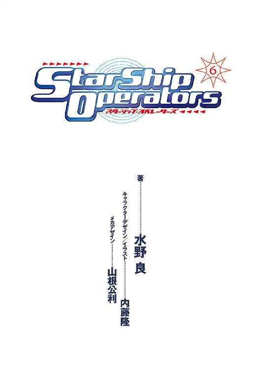
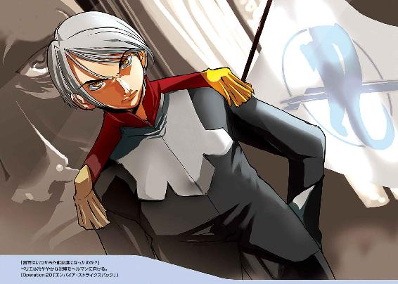
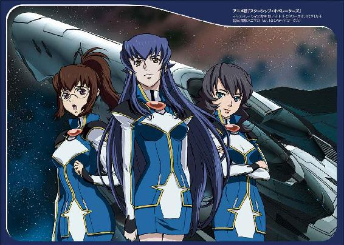
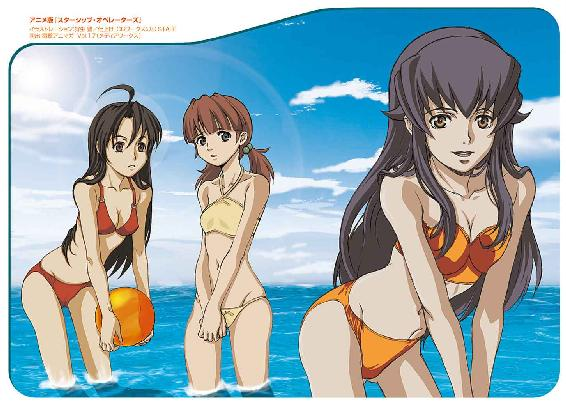
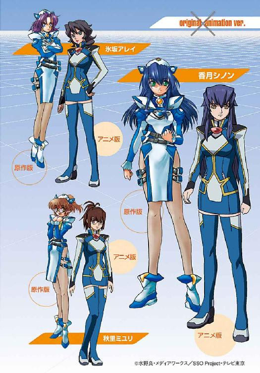
本書（電子版）に掲載されているコンテンツ（ソフトウェア／プログラム／データ／情報を含む）の著作権およびその他の権利は、すべて株式会社ＫＡＤＯＫＡＷＡおよび正当な権利を有する第三者に帰属しています。
法律の定めがある場合または権利者の明示的な承諾がある場合を除き、これらのコンテンツを複製・転載、改変・編集、翻案・翻訳、放送・出版、公衆送信（送信可能化を含む）・再配信、販売・頒布、貸与等に使用することはできません。
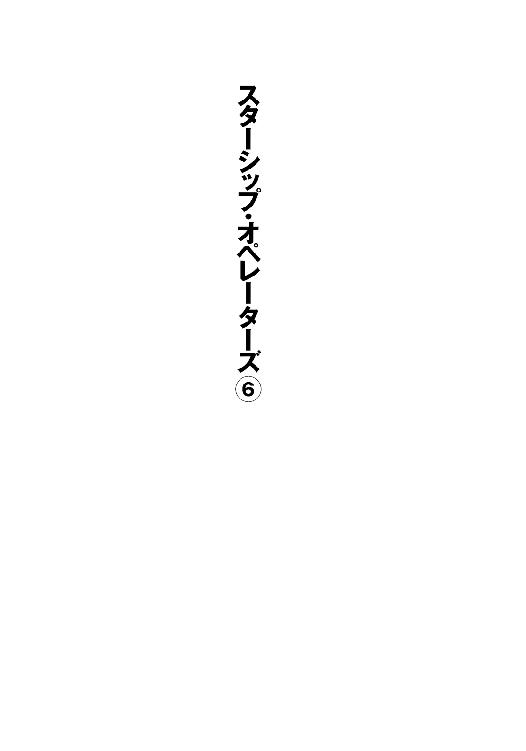
初出 スターシップ・オペレーターズオフィシャルサイト
URL:http://www.starshipoperators.com
電撃hp Vol.33,Vol.34,Vol.35
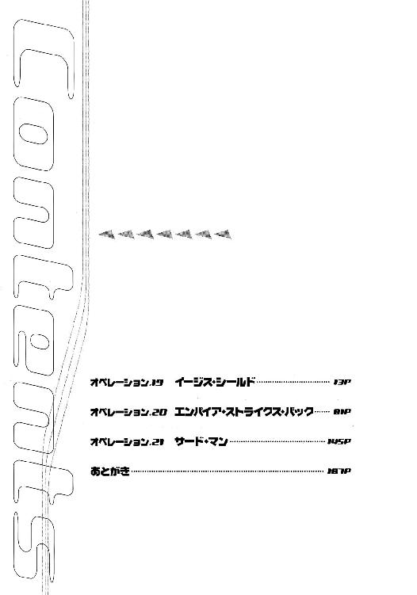
カバーデザイン◎荻窪裕司
編集◎フィールドワイ
キャラクターＣＧ◎内藤隆
メカＣＧ◎山根公利
オペレーション19 イージス・シールド
１
西暦二三〇一年一月二日 ヘンリエッタ星域惑星キビ
惑星キビから見上げる夜空は日本のそれとは、まるで異なっている。
北斗七星やカシオペア座など見慣れた星座は無論ないし、数千もの星々からなる散開星団内にあるためか、マイナス等級の明るい星がやたら目につく。
そして散光星雲であるＭ４２オリオン大星雲が、夜空の一画をオーロラのように覆っている。昼間でもこの散光星雲の姿は見ることができる。最初にそれを見たときは、青い空についた大きな染みのようだと感じたものだ。
ここ惑星キビは人類の故郷ではない。
地球化が進んでいるとはいえ、キビの大気の成分には人体に有毒な成分がまだまだ含まれている。
海はもっとひどい状況で、バクテリアがようやく自生をはじめた段階。浄化水門で仕切られた内海には地球上の海と同じ生き物が生息しているものの、それは巨大な水族園にすぎない。
それでも、この惑星で生まれた住人にとって、ここは間違いなく故郷なのだ。
（自由護衛艦アマテラスの乗員は、香月シノンは、この夜空の下で生まれ、この夜空を見上げて育ったんだな......）
佐竹マサラは心のなかでつぶやく。
「あそこに見えるのが、インカ星系の主星です。わたしたちにとっては、トランプ座の四つ角のひとつとしてなじみ深い星ですよ」
マサラからすこし離れた場所にいる若い女性が夜空の一点を指さしながら、遠慮がちに声をかける。
グリーンの髪を頭の横で束ねた小柄な女性だ。瞳も同じ色。無論、自然の色であるはずはなく、髪は染めていて、カラーコンタクトをいれているのだ。
彼女の言うとおり、そこにはひときわ明るい四つの星が長方形に並んでおり、カードのように見える。惑星国家キビの独自の星座なのだ。
彼女の名前は笠原シズクという。
惑星国家キビの国立工科大学の学生である。キビの学生運動家のひとりで、反同盟とアマテラス救援のために活動している。
年齢は二〇歳で、今、大学の四年。小学校で二年、中高学校で一年飛び級しているそうで、アマテラスの乗員とは同期である。
つまり留年しているわけだが、ヘンリエッタ星域惑星国家同盟に加盟した政府に対する抗議行動として、昨年の試験をボイコットしたのが卒業できなかった理由だ。
昨年、卒業予定だった学生の九〇パーセント近くが、この抗議運動に参加したという。むしろ、まじめに試験を受け、卒業した学生のほうが肩身の狭い思いをしているだろう。
（ま、ボクも大学は休学しているものな）
おそらく、卒業などできないだろうと、マサラは思っている。
だが、後悔はしていない。
自分が本当にやりたいことをしているという充実感があるからだ。
だが、達成感はまだない。
六カ月もの月日と一五〇〇光年もの距離を超えて、ここヘンリエッタ星域にやって来た。だが、この星域を舞台とした戦争はまだ続いているし、惑星国家キビも王国に征服されたまま。そして自由護衛艦の乗員たちは、命をかけて戦い続けている。
今、この瞬間も......
「放送のほうは、見なくていいんですか？」
シズクが心配そうに訊ねてくる。
「アマテラスと敵艦との戦闘が、もうすぐはじまりますよ」
敵側にアマテラスの戦術が漏洩するのを防ぐため、ライブ放送は中断され、タイムラグ放送に代わっている。
アマテラスは敵艦隊の油断に乗じて、敵戦闘艦の一隻と一騎打ちの戦闘に持ち込むことに成功した。
だが、その戦闘艦は突如として二隻に分裂したのだ。そしてアマテラスに対し、二方向から攻撃を加えようとしている。
一隻で二隻と戦った場合の勝率は二五パーセント以下。そんな戦いに、アマテラスの乗員はこれから臨もうとしているのだ。
「あの星の近くで、アマテラスは戦ってるんだな......」
インカ星系の主星の輝きを見つめながら、マサラはひとりごとのようにつぶやいた。
「ですが、インカ星系とは五〇光年以上離れています。超高性能の望遠鏡があったとしても、アマテラスは今、見えませんよ」
シズクがそう言って笑う。
光が届くのは、五〇年も先なのだ。
「光速を超えるって不思議なものだよね」
マサラはうなずく。
「佐竹さんは、一五〇〇光年の大旅行をしてこられたのですものね。わたしは恒星間旅行なんかしたことないから......」
実感がわきません、とシズクは首を横に振った。
「ボクもだよ」
マサラは笑顔を浮かべ、シズクの言葉にうなずいた。
そしてふたりはすこし離れた場所に停車している大型のワンボックスワゴンへ移動する。
彼らがいるのは、キビの首都から三〇キロほど離れた荒野である。乾燥に強い植物がまばらにはえているが、本当になにもない場所だ。
だが、ここなら王国──ヘンリエッタ星域惑星国家同盟──の情報部や惑星国家キビの警察を気にすることもない。
予想していた以上に、マサラに対する監視の目は厳しいのだ。
ちょっとでも法規に反したことをすれば、即座に国外退去を命じられそうな雰囲気である。それほど、惑星国家キビの現政権の立場は危ういのだ。国民の大多数はアマテラスを支持している。そしてアマテラスは、亡命政府であると主張しているのだ。
現政権の首脳は現実的な選択をしたにすぎないのだが、結果的には国民の反感を買い、孤立を強いられている。
そこへ地球からマサラがやってきたわけだから、キビ政府の首脳が警戒するのも当然かもしれない。
大型のワンボックスワゴンには、シズクと同じ団体に所属する三人の学生が乗り込んでいた。
ワゴンには、何台ものＡＶ機器が積みこまれ、スターシップ・チャンネルや惑星国家キビの地方放送、さらには同盟よりの立場を取ることで知られるニュースチャンネルなどを常時、モニターしている。
年が変わって、二四世紀を迎えたわけだが、アマテラスを取り巻く状況は好転するどころか、厳しさをましているように見える。同盟の行動は大胆になり、そして国連安保理は無駄な議論を重ねるばかり。
戦争は終結に向かうどころか、ますます激しく、そして凄惨なものになりそうな予感さえしている。
（ボクは、どうすればいいんだろう？）
マサラはいつも、自分に問いかけている。だが、その答は見つからない。
そして今は、地球にいたときと同様に祈ることしかできない。
自由護衛艦アマテラスの勝利を......
２
同日 インカ星系第四惑星軌道付近──
攻撃目標と定めた敵艦が、二隻の戦闘艦に分裂した瞬間、自由護衛艦アマテラスの第一艦橋には緊張が走った。
「......噓でしょ」
艦長補佐である香月シノンはそうつぶやいて、そのまま絶句した。
それから、六時間が経過している。
敵艦はアマテラスを挟撃すべく、散開しつつある。
一方、アマテラスのほうは決められたコースをひたすら加速しているだけ。下手に進路を変えると、他の王国の戦闘艦にまで攻撃されることになるからだ。
まるで宇宙空間に線路が敷かれていて、その上を走っているような状況である。
「......敵艦の分析、ほぼ完了しました」
主任観測員の秋里ミユリが言って、艦長の神崎キスカを振り返った。
髪をポニーテールにまとめているため、広くでている額には汗が滲んでいる。だが、その声は明るく、疲れは感じさせない。
しかし、彼女はこの数時間、光学観測主器〝南十字〟から送られてくる映像を食い入るように見つめていた。
そしてアマテラスの光素子人工脳〝ＡＥＳＯＰ〟にデーターを転送し、敵艦の性能を分析する作業を行っていたのである。
それが、ようやく完了したのだ。
「武装は三六〇〇ミリプラズマキャノンと三〇〇ペタワット級レーザーキャノンが一基ずつです。艦首に特殊な装甲はありませんが、棒状の船体をしていて被弾率を低く抑えています」
「武装も防御力も貧弱ということか......」
ミユリの報告を聞いて、キスカはわずかに安堵の表情を見せた。
「三六〇〇ミリのプラズマキャノンなら、たとえ直撃してもこの艦の装甲を貫通することはないんじゃないか」
「数発の直撃弾なら、たしかに耐えられるとは思いますが......」
シノンは魂の抜けたような声で、キスカに答えた。
「三六〇〇ミリのプラズマキャノンなら、射程はアマテラスの主砲の一・五倍はあると考えられます。しかも、敵が二方向から攻撃を加えることを想定すれば、追加装甲のない場所にも直撃を受けることを考慮しなければなりません。その場合、三六〇〇ミリのプラズマキャノンでも十分に致命的となります......」
「まさか、二隻に分離するとはな」
キスカが忌々しそうにつぶやく。
「敵艦の形状が双胴だったのが、気になってはいたのですが......」
一対一の戦いに持ちこめると思ったからこそ、アマテラスは敵艦隊の隙をついて加速したのである。
「戦わず、離脱するというわけにはゆかないのか？」
キスカが不機嫌に言う。
「最大加速で敵艦に向かっているんだ。無理に決まっているさ」
主任通信員の氷坂アレイが独特の声と口調でつぶやく。
狭い艦橋内のことである。無論、彼女の声はキスカの耳に入っただろうが、彼は聞かなかったふりをした。
「香月艦長補......」
そして咳払いをひとつしてから、キスカはシノンに呼びかけた。
「予想もしていなかった事態だが、キミなら、この状況にどう対処するのかな？」
カメラを意識しているのか、キスカの口調は冷静だったが、その視線には非難の色がはっきりとうかがえた。
「どうしましょうか......」
シノンは呆然と答えた。
キスカの言うとおり、予想もしていなかった事態である。とっさに対処法が思い浮かぶはずはないし、そんなものがあるとも限らない。
「分かっていることは、二隻の敵艦と戦った場合、アマテラスの生存確率は極めて低くなるということです......」
「それくらいは、ボクにだって分かっている」
キスカはいらだった声で答えた。
「アマテラスは決められたルートを通るしかないのですから、駆け引きのしようもありません。敵が射程内に入るのを待って攻撃するしか......」
「二隻を相手に、正面から戦うわけか？」
キスカがうつむいて、うんざりとした顔をする。その表情をＴＶカメラはアップで捕らえていたのだが、彼は気づいてもいなかった。
無論、番組での彼は、そんな表情を見せるキャラではないから、放送時にはＣＧ処理されて差し替えられることになる。
「電子の賢者......ＡＥＳＯＰはなにか提案していないのか？」
キスカはすがるような視線をミユリに向ける。
「二隻を相手にするときの基本的戦術を提案しています。一隻を全力で撃破したのち、もう一隻に艦首を向ける......」
「教科書どおりじゃないか」
キスカが舌打ちをする。
「──キスカ君、もっと落ち着いて」
たまりかねたように通信制御室のディータ・ミルコフから指示が飛んできた。
「ですが......」
「──危機的な状況は番組的に大歓迎よ。女の子たちには、もっと不安そうにしてほしいぐらい。でも、あなただけは、どんな状況でも冷静でいてくれないと、ね」
「わ、わかりました」
キスカがあわてて答え、背筋をただす。
「......二隻に分かれたことで、敵艦の性能はそれぞれ落ちているはずだ。我々はこのままの進路を維持すればいい」
「──そうよ、その調子」
鼻にかかったようなディータの声が響く。
「おだてるのうまいよねぇ、ディータさん」
ミユリがこっそりとシノンに囁く。
「物は言いようだわ。どうせ、このまま進路を維持するしかないんだもの」
シノンがため息まじりにうなずく。
「......アマテラスはこれより敵戦闘艦との戦闘に入る。敵艦のコードネームは、〝チョップスティック〟とする」
キスカが堂々と宣言した。
お箸を意味する敵艦のコードネームは、銀河ネットの放送作家トニー・ガリアーノが考えたものである。
（それにしても、キスカも演技うまくなったものね）
シノンは内心、感心する。
それだけ必死だからだろう。彼は自らの役に徹することで、恐怖心と戦っているのだと、彼の恋人の間宮リオから聞いたことがある。
そしてそのリオは、間宮の家名と政治家としてのプライドで恐怖心を抑えているそうだ。
ふたりとも、本質的には軍人ではない。
キスカはただ受験競争の先頭を走ってきただけだし、リオは政治家になるための最初のキャリアとして自衛隊に入隊することを選んだだけだ。
この艦に残っている乗員のほとんどは死を覚悟しているが、彼らは違う。
銀河ネットを通じて国際世論に訴えかければ、国連が宇宙軍を派遣してくれると、本気で信じていたのだ。
だが、彼らの予想に反して、事態はほとんど変わっていない。
むしろ銀河ネットを利用したことで、保守的な老人たちは反感を抱いたようにも思える。全世界の若者たちが共感してくれていても、それはやはり量子の波とモニター越しのものでしかない。現実の出来事とは分かっていても、それが虚構とどう違うのか、おそらく実感はできないだろう。
それで当然なのだ。
戦場に身をおかないかぎり、本当の戦争がわかるはずがない。アマテラスの第一艦橋に身をおいてさえ、ときどきドラマを見ているような錯覚をおこすぐらいなのだ。
敵は三〇万キロも彼方にあり、高性能の望遠鏡の助けがなければ、見ることもできないのだから。その意味では先日、ＡＧＩの宇宙港であった銃撃戦の跡は生々しいものだった。
そして修理班長である神野イリキの死は、アマテラスの乗員に重くのしかかっている。
だが、艦を降りようとする者は、誰もいなかった。それができる時期はとっくに過ぎていることを、全員が理解しているからだろう。
未来は予測不能とはいうものの、この先、厳しい運命が待ち受けていることは不可避のように思える。
シノンにも、長期的な勝算はなにもない。ただ目前に迫った戦いを生き抜くことに全力を尽くすだけである。
しかし、それさえも厳しいのが、アマテラスの現状だ。
（二隻の敵艦に対し、どう戦えばいい？）
シノンは自分に問いかけてみる。
キスカは正攻法を信じ、少ない確率に賭けるつもりでいることだろう。
だが、シノンにそのつもりはない。
（なにか、あるはずよ。一パーセントでも二パーセントでも、アマテラスの勝率をあげるための作戦が......）
シノンはモニターを見つめるふりをしながら、敵戦闘艦との戦闘を妄想しはじめた。アマテラスがこの戦闘に勝利するイメージを得ようとして......
モニターを見つめたまま硬直したようになったシノンを見て、ミユリとアレイは微笑を浮かべてうなずきあった。
自分の世界に入った彼女の任務を、フォローすることを確認し合ったのである。
シノンが最後の一瞬まであきらめないことは、ふたりともよく知っている。
そして戦闘開始予測時間まで、まだ二〇時間もあるのだ。
３
ヘンリエッタ星域惑星国家同盟宇宙軍所属の双胴遊撃艦ミユライの艦長であるヴァン・デ・ベルレは、艦長席に腰をおろしながら冷笑を浮かべていた。
その視線の先には、メインモニターに映る〝海賊船〟アマテラスの姿がある。
ベルレは半年ほどまえに少将に昇進し、この双胴遊撃艦の艦長に就任した。年齢は三八歳。最高会議のメンバーのなかでは、若い部類に入る。
「思いがけず、戦功をあげる機会を得たな......」
ベルレはマイクを手にし、呼びかける。
「──まったくです。ペリエ最高会議議長代理に手土産ができます」
すぐに返信があり、メインモニターは二分割され、軍服姿の男の上半身が映る。
ミユライの副艦長スティーブ・ナッシュである。
二隻に分離した双胴遊撃艦ミユライのレフトサイドを指揮している人物でもある。階級は准将。副艦長とはいえ、独立して行動できる戦闘艦の艦長ゆえだ。
最高会議のメンバーにも推挙されたが、古参の艦長の反対を受けて実現しなかった。だが、ここでアマテラスを沈める戦功をあげれば、反対派を沈黙させるに十分のはずだ。
ベルレとナッシュは同期で、士官学校時代からの親友でもある。
ふたりは一〇年以上も前から、最高会議議長代理となったミシェル・ペリエとひそかに連絡を取り合い、彼を支持する若手将校のグループに加わっていた。
ミシェル・ペリエの〝親衛隊〟だと、ベルレやナッシュのグループは揶揄されている。
それを否定するつもりはない。
だが、昇進のためではなく、同盟宇宙軍を変革するために、彼らはグループを結成したのだ。そして最高会議議長オーギュスト・ペリエの息子という理由だけで、ミシェル・ペリエをリーダーに選んだわけではない。
（彼の指導力は父親以上だ......）
ベルレはそう確信している。
（そして我々は、彼の志に共鳴したのだ......）
アマテラスなど同盟にとっては、さほどの障害ではない。足並みのそろわない連合も敵ではない。だが、地球の超大国が保有する宇宙戦闘艦隊は、数においても性能においても、同盟宇宙軍を凌駕している。
今、国連の介入を許すわけにはゆかない。だが、アマテラスは銀河ネットのメディアを通じて、地球の人々の注目を集めている。超大国の民衆のあいだでも、同盟を非難する空気が、次第に高まりつつあるのだ。
ここで、アマテラスを排除しておくにこしたことはない。
「ペリエ閣下の理想を、こんなところで潰えさせるわけにはゆかんのだよ......」
ベルレは自らに言い聞かせるようにつぶやく。
オーギュスト・ペリエ議長が目指していたのは、あくまでヘンリエッタ星域の統合でしかなかった。
それに対し、ミシェル・ペリエ議長代理は、人類の超国家的統一まで視野に入れている。国家は地上にあって民衆を治める。そして軍事力を独占した超国家機関が、宇宙を管理し、国家間の利益の調停を行う。
ミシェル・ペリエの最終目的はそこにある。
「このまま最大加速で散開し、アマテラスを挟撃する。最新鋭艦とはいえ、側面装甲は紙のようなものだ。プラズマキャノンの一撃で沈められよう」
ベルレは自信の笑みを浮かべる。
「──了解です。御武運を......」
ナッシュは宇宙軍式の敬礼を送ってきた。
「貴官もな。戦いが終わったら、わたしの部屋で特上のワインを開けよう」
ベルレは副官に笑顔で答礼すると、通信回線を閉じた。
「どうだ？ ミユライの援護はできそうにないか？」
同盟宇宙軍の重装巡航艦コンキスタドールの艦橋で、艦長であるデュール・エルロイは、観測員と航宙士に何度も確認させる。
「アマテラスと交戦するための進路を取ろうとすると、惑星国家ゲルマニアの戦闘艦の射程圏内に入ることになります。それも側面を向けて......」
航宙士が答え、予想進路を三次元座標で表示する。
「油断したな......」
エルロイは舌打ちをする。
「今回、我が艦がマークしていたのは、ゲルマニアの戦闘艦でしたからね......」
やむをえないでしょう、と新任の副長であるアンヘル・ヒメネスが、わずかに肩をすくめた。まだ三二歳と若い大佐である。
先任の副長は一階級昇進し、今は補給艦の艦長をつとめている。その後任として、ヒメネスはコンキスタドールにやってきたのだ。
「貴官にそう言ってもらえると、安心するよ」
エルロイは皮肉っぽく笑う。
彼はミシェル・ペリエの〝親衛隊〟のメンバーなのだ。このコンキスタドールとエルロイを監視するため、最高会議議長代理が送り込んできたのは明らかである。
「ゲルマニアの戦闘艦は、我が軍の工作船を追尾し、撃沈した事実があります。連合のなかでは、我々との対決色が強い惑星国家だと言わざるをえないでしょうな」
「射程距離に入ったら、容赦なく攻撃をしかけてきそうだな」
エルロイはふむ、とうなずく。
「そう考えたほうが、無難でしょう」
「最新鋭の戦闘艦に側面をさらすわけにはゆかないな。本艦は現在の進路を維持、このまま戦域から離脱する」
エルロイは全乗員に命令した。
「それにしても......」
そうつぶやいて、コンキスタドール艦長はメインモニターに視線を向ける。
「あの混乱のなかで、よく一対一の戦いに持ち込めたものだな......」
ぎりぎりのタイミングまで、双方五隻ずつの艦隊は、互いに譲ることなく接近していたのである。
同盟軍の今回の作戦の主目的は無論、連合の艦隊との戦闘でもインカ宇宙港の攻撃でもなかったが、連合およびＡＧＩが譲歩しなかった場合には、それらも作戦のなかに組み込まれていたのである。
そうなれば、人類史上最大の宇宙海戦となったであろうし、宇宙時代になって最初の大量虐殺ともなりかねなかった。
（もっとも、我が軍が敵艦隊との戦闘に勝利していたかどうかは疑問だがな......）
エルロイは心のなかでつぶやく。
敵艦隊は皆、最新鋭の戦闘艦である。建造費も比較にならないほどだろう。同盟の宇宙戦闘艦は数を調達するため、一隻あたりの建造費は抑えられている。そのため、単機能に特化しているわけだが、アマテラスはことごとくそれに対処し、何隻もの同盟の戦闘艦を沈めてきた。
ＡＧＩがついに譲歩し、戦闘が回避されることが決定したあとも、緊張は消えなかった。
高速で接近する戦闘艦が、互いの射程距離に入らないよう進路を変更せねばならなかったからだ。
しかも、相手がどのような進路を取るか予測はできないし、味方の進路しだいで連合の艦も進路をさらに変更してくる可能性がある。各艦の観測装置と人工脳はフル回転し、進路計算を行い、進路変更を行っていた。
その混乱のなか、アマテラスは突如として最大加速をはじめ、気がついたときには双胴遊撃艦ミユライはアマテラスとの交戦を避けられない状況になっていた。
「観測装置と人工脳の性能が優れているからだろうが......」
まるで、この事態を想定していたと思えるような正確で素早い行動だった。
「ルイス・ベルモント提督は、アマテラスが連合やＡＧＩと共謀し、同盟軍を罠にかけたと主張しておられましたね」
「もしもそうなら、アマテラスの作戦行動にも納得がゆくのだが、連合がそこまでアマテラスに協力的とは、正直、思えんな」
「ともかく、アマテラスをマークしていたのが、双胴遊撃艦ミユライで幸いでした。一対一の戦闘における模擬戦では、ミユライの勝率は七割を超えていますから......」
ヒメネスが微笑を浮かべる。
「ベルレ艦長は大きな軍功をあげることができるでしょう」
「だといいが......」
エルロイは顎に手をあてながら、つぶやく。
「たしかに、双胴遊撃艦ミユライは一対一での戦闘に確実に勝利するため建造された艦だ。しかし実戦と模擬戦は別物だからな。しかも、相手はあのアマテラスだ。決して油断はできんよ......」
「艦長がミユライを援護しようとされたことは、小官から議長代理に報告いたします。残念ながら果たせなかったわけですが、あとはミユライの武運を祈ろうではありませんか」
「たしかに、そうだな......」
エルロイは苦笑まじりにうなずく。
「ここで否定的に考えていてもしかたがない。ミユライとベルレ艦長が戦功をあげるのを信じ、しっかりと見届けるとしよう」
エルロイは答えて、アマテラスを観測し続けるように観測員に命令した。
大型の万能艦であるコンキスタドールには、高性能の観測装置が搭載されている。そしてそのデータはミユライともリンクされているのだ。
直接援護はできなくとも、間接援護は可能なのである。
（それでも......）
と、エルロイは、心のなかでつぶやいた。
（あの双胴遊撃艦に、アマテラスが沈められるとは、どうしても思えんな......）
それは、あの最新鋭の戦闘艦と戦ってみたいという軍人としての願望かもしれないし、幾度も戦場に身を置いた経験からくる直感かもしれない。
エルロイは腕組みしたまま、メインモニターに映るアマテラスにじっと視線を注ぎ続けた──
「アマテラスめ！」
惑星国家ガリアの新造戦闘艦ジャンヌ・ダルクの艦橋で、ジャン・パトリック・ルブランは怒りの声をあげていた。
「いったい誰の許可を得て、戦闘をするというのだ！」
ＡＧＩ──アリマ・ジェネラル・インダストリの私有星系であるこのインカ星系に、同盟宇宙軍の宇宙戦闘艦五隻がワープしてきてからというもの、ガリア政府は様々な手段を駆使して、各方面との交渉を行っていた。
ひとつには同盟宇宙軍との直接戦闘を回避することであり、もうひとつはＡＧＩのアマテラスへの支援を停止させることであった。
そこで惑星国家ガリアから支援（それも有償のだ）を持ちかければ、アマテラスはそれに応じるしかなくなる。惑星国家ガリアはなんの損失もなく、最新鋭の宇宙戦闘艦の指揮権を握ることができたはずだった。
だが、アマテラスはそのガリアの意図を傍若無人に踏みにじったのである。
戦闘回避の合意を無視し、同盟連合双方が散開して戦場を離脱する混乱をついて、敵艦の一隻に向かって加速していった。
もっとも、その宇宙戦闘艦が二隻に分裂し、今は絶体絶命の危機に陥っているのだが......
「いい気味ですわ」
艦長席のすぐ近くで、通信員の任務についているルブランの娘アニエスが、口に手をあてながら笑い声をあげる。
「ルブラン少尉、今は任務中だぞ」
提督であるルブランは、士官学校を卒業したばかりの娘をたしなめた。
「も、申し訳ありません」
アニエスはあわてて沈黙する。
と、そのとき、彼女のインカムに通信室より連絡が入ってきた。
「......えっ、同盟軍の艦隊司令から通信が入っている？」
アニエスは判断を仰ごうと、父を振り返る。
「艦隊司令は誰か？」
ルブランは娘に訊ね返す。
「ルイス・ベルモント提督です。高速攻撃艦マリアナの艦長です」
「ベルモントか......古参の提督だな。リカルド・ファレス亡き今、同盟宇宙軍のナンバー２のはずだが......」
ルブランはつぶやく。
「艦橋に通信を回せ。直接、話し合おう」
ルブランは娘に答えた。
「了解」
アニエスは宇宙軍式の敬礼を返し、父の指示に従った。
ジャンヌ・ダルクのメイン・モニターに初老の軍人の顔が大映しになる。
「──ルブラン提督、この状況はいったいどういうことかな？」
ルイス・ベルモントが怒りを抑えた声で呼びかけてきた。
その顔は、全身の血がのぼったのかと思えるほどに真っ赤だった。
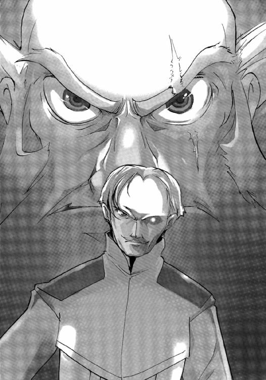
「どういうことか、と言われてもな」
ルブランは表情を変えずに、ベルモントに答える。
「──連合は我が軍と、この星域での戦闘を回避するという合意に達したのではないのか？」
「そのとおりだ。ゆえに、我が艦隊は貴官の艦隊と交戦距離に入らぬよう進路を変更した。合意のとおりにな」
ルブランはメインモニターに映るベルモントを見つめたまま、冷静に答えた。
「──では、なにゆえ、海賊船は我が軍の戦闘艦を攻撃しようとしている？」
ベルモントが大声をあげて、身を乗りだす。
もしも可能なら、海軍刀を振りかざして、この艦に乗り込んできそうな勢いだった。
ルブランはわずかに首をかしげ、顎に手をかける。
「それは貴官が言ったとおり、あの艦が海賊船だからではないのかな？ それを承知していながら、なぜ、このような事態になったのか、わたしには推察しかねるが......」
ルブランの指摘に、ベルモントは一瞬、言葉を詰まらせる。
「──よくも言えたものだ。海賊船と共謀し、我が艦隊を罠にはめたのだろう。これは貴官からの宣戦布告と理解するが、よろしいかな？」
「貴官がそう理解するのを止めることはできない。だが、そのような事実はない」
恫喝とも思えるベルモントの問いかけだったが、ルブランは平然と言い返した。
「──ならば、それを証明してみせることだな」
「証明？ どうやってかな？」
ルブランは問いかえす。
「──現在のところ、貴艦だけが唯一、海賊船を攻撃できる位置にある。貴艦の手で、あの海賊船を葬り去ってもらいたい。それが法治国家の宇宙軍である貴艦の義務と思えるがな」
ベルモントが不気味な笑みを浮かべる。
「残念ながら、わたしにその権限はないな。惑星国家ガリアの議会では、アマテラスを海賊船と認定するかどうか、正式な決定を下してはおらんのだ」
ルブランは答え、通信を終える意志を伝えるべく、軍帽を正した。
「わたしにはあの艦は、貴官の計略にはまり、絶体絶命の状況のように思えるよ。貴官の武勲を妨げるわけにもゆくまい」
ルブランはそう言うと、これで失礼すると、ベルモントに通告した。
「──無論、海賊船は仕留めてみせるぞ。そして貴官とはまたいずれ、どこかの戦場でまみえよう......」
ベルモントは憤然として答えると、敬礼もせずに通信をオフにした。
「......いいのですか？」
通信が終わるのを待ちかねたように、アニエスがルブランに声をかけた。
「なにが、いいというのだね？」
ルブランは静かに娘に訊ねる。
「今のままでは、連合はアマテラスの独断を容認していることになります。同盟は、我が惑星国家に宣戦布告するかもしれません」
「ならば、少尉はベルモント提督の提案どおり、アマテラスを沈めろ、というのかね？」
「合意を無視したあの艦の行動こそが、彼らが海賊だとの確証と言えませんか？ 行動を起こせば、議会は追認するしかないはずです」
アニエスは勢い込んで言った。
「冷静になりたまえ、アニエス。それで、我が国にどんな利益があるというのかね？ 我がガリアの国民の六〇パーセントが、あの艦の行動を支持しているという現実を覚えておきたまえ」
毅然としてそう言ったあと、忌々しいことだがな、とルブランは娘にだけ聞こえる声で続けた。
その言葉に、アニエスは微笑をもらす。
（アマテラスは強力なカードだが、我がガリアの手札にならない以上、捨て札となってもらったほうがいい......）
ルブランは心のなかでそうつぶやいた。
「それよりも、少尉。国防省のモロー長官と通信をつないでくれないか？ わたしは提督室から長官に報告を行う」
もしも、アマテラスが沈むようなことがあれば、この星域の状況は大きく変わることになる。そのとき、惑星国家ガリアがどのように行動すればいいか、検討しなおさねばならない。
（まさに忌々しいかぎりだ......）
ルブランはつぶやくと、提督席から立ち上がった。
４
「今、何時？」
モニターをじっと見つめたまま身じろぎひとつしなかったシノンが、ミユリに問いかけたのは、アマテラスが何度めかの一〇Ｇ加速を終えて、通常の一Ｇ加速にもどった直後だった。
「あれから二時間かな？ 敵艦は散開を続けながら減速しているので、交戦開始予定時刻は、およそ一九時間後よ......」
ミユリが笑顔で答える。
「ところで、なにかいい作戦、思いついた？」
「この艦が沈められるイメージばかり思い浮かんだわ......」
シノンはうんざりとした表情で首を横に振った。
「どういうイメージ？」
アレイが静かに訊ねてくる。
「アマテラスの射程距離外からプラズマキャノンの直撃弾を何発も受けて、熱的損傷が限界値を超えたり。偶然、同じ場所に直撃弾を受けて、装甲が貫通されたり......」
シノンは苦笑をもらす。
「どちらが楽な死に方かな」
アレイが口笛を鳴らした。
「どちらもぞっとしない......」
シノンは自らの肩を抱く。
「だけど、もっとも高い確率で想定される負け方は、追加装甲のない舷側にプラズマキャノンの直撃弾を受けることだわ。何度も思い描いているうちに、この負け方しかないっていう気がした......」
シノンはそう言うと、自分の言葉に対し、何度となくうなずいてみせる。
「なるほどな」
アレイが相槌を打った。
「つまり、それさえ防ぐことができたら、負ける気がしないということね」
「そうなの！」
シノンは勢いこんで言うと、思わず座席から立ち上がる。
そしてようやくここが第一艦橋で、現在、第二級戦闘態勢であることを思いだし、あわてて座席にもどると、艦長であるキスカに頭を下げた。
「いや、いい。続けてくれ」
キスカはこういう状況には、もはや慣れ切っているので、苛立つそぶりも見せなかった。
「問題は舷側に追加装甲がないことなんです。この艦はそのように設計されていませんから」
宇宙戦闘艦どうしの戦いは一対一を想定しており、正面からの攻撃に対してしか備えていない。
「でも、追加装甲がないわけじゃないんです」
シノンはキスカに向かって明るい表情で言った。
「ないわけじゃないって、いったい、どこにあるというんだ？」
キスカが首をかしげる。
「当たり前の答で申し訳ないのですが、倉庫には予備の追加装甲が保管されています」
シノンはそう言ったが、その表情は明るかった。
「なんだ......」
キスカはあからさまに落胆の表情を見せ、大きくため息をついた。
「倉庫にあっても、艦を守ることはできないだろう」
「仰るとおり、倉庫にあるかぎり、艦を守ることはできません。そして、追加装甲を舷側に施すこともできません」
シノンは大きくうなずく。
「ですが、追加装甲を宇宙空間で接合させることは可能なんです。そして二隻めの敵艦に向けて配置する......」
「つまり、盾のようにか？」
「まさに、そのとおりです」
シノンは笑顔を見せた。
「だが、追加装甲が機能を発揮するには、それだけでは不十分だ。装甲にはエネルギーが供給されているし、熱変換光素子のパネルも取りつけないと......」
「計算しましたが、エネルギーは着陸艇のエンジンで十分に供給可能です。気になるのは、時間です。およそ四百枚の追加装甲を接合させないといけませんから......」
だが、追加装甲はエネルギーさえ供給すれば、自動で接合する機能が付加されているから、それほど時間は必要としないはずだ。
シノンの計算では、交戦までにぎりぎり盾は完成するはずである。
「ただ、この盾の機能を維持するため、着陸艇と作業艇は宇宙空間に留まり続ける必要があります。作業員を危険にさらさないといけないのが......」
だが、この作戦を実行しないかぎり、勝率二五パーセント以下の戦いに、アマテラスと乗員の運命を委ねることになる。
それを避けるため、シノンはこの作戦を思いついたのだ。
（わたしはみんなに無事でいてほしいと思っているだけなのに......）
そのためには、敵艦に勝利しなければならない。そして考えた作戦が、今度は仲間たちの生命を危険にさらさないといけない。
その矛盾に、シノンは苦悩を感じていた。だが、提案してしまった以上、もはや撤回はできない。
「......分かった。キミの提案を承認しよう」
キスカは安堵の表情を見せていた。
「敵艦はあわてて減速しているが、双方の相対速度はこれまでにないほど高速だ。射程距離の差はさほど問題にならない。命中率、打撃力、防御力では、アマテラスは敵を圧倒しているはずだ。追加装甲板の盾さえ保ってくれれば、我々の勝利は疑いない」
「そうであってほしいと願っています......」
シノンはひとりごとのように答えた。
そしてメインモニターを振り返る。主映像は二分割され、二隻に分裂した戦闘艦の姿が、それぞれ映しだされている。
（この二隻より、時間との戦いになる......）
シノンは心のなかでつぶやいた。
戦闘がはじまるより先に、盾を完成させないとアマテラスの運命はつきるのである。
５
「──着陸艇、アキホ発進しますよぉ」
摩耶アキホののんびりとした声が、第一艦橋に響いた。
「──作業艇〇一、アレイ発進する」
「──作業艇〇二、サンリ発進します」
氷坂アレイの低音と若菜サンリの舌足らずな声がそれに続く。
「気をつけてね」
シノンは不安そうに、三人に呼びかけた。
「──船外作業員男子、その他大勢、行くぜ～」
補修班に所属の徳山タクミが、冗談めかして言う。
彼が、船外作業班の班長なのだ。
「〝神の盾〟組立作業の主役は、あなたたちなんですから、ＴＶにもばっちり映りますよ」
シノンが営業用の笑顔を浮かべて言う。
「──宇宙服を着ていて、バイザーは真っ黒なんだぜ？ 家族が見たって、誰なのか分からないぜ」
「映像処理は、スターシップ・チャンネルの得意技です。みなさんが頑張っている姿も、ちゃんと放映されますから......」
シノンはそう答えた。
そして自由護衛艦アマテラスの格納庫から、着陸艇と二隻の作業艇がそれぞれゆっくりと発進する。
同時に、エアロックからは船外作業員たちがひとりまたひとりと遊泳してゆく。
アマテラスはすでに慣性航行に入っており、同じ速度で運動している彼らにとっては、静止しているも同然だった。
「倉庫から格納庫へ、多機能装甲板スカラベの配送ははじまっています。作業艇はスカラベを格納庫から宇宙空間へ搬出、着陸艇まで搬送してください」
「──了解」
「──了解しました」
シノンの呼びかけに、アレイとサンリが応答した。
「着陸艇は所定の位置で待機。全作業員はスカラベが到着しだい、着陸艇とスカラベをエネルギーケーブルで接続、順次、接合していってください。戦闘開始予定時刻まで、およそ一二時間。重労働ですが、作戦の成否はみなさんの双肩にかかっています。安全には十分、気をつけて作業をお願いします」
「──作戦が終わったら、食堂で慰労会よろしく。ちゃんとサービスしてくれよ」
「......わかりました。企画しておきます」
タクミの通信に、シノンはまじめにうなずいた。
そしてキャンギャルのコスチュームでも着て、フードやドリンクを配ってまわる覚悟を決める。それぐらいでは割に合わないぐらいの過酷で危険な作業を、彼らに要求しているのだ。
シノンはしばし瞑目し、彼らの安全を祈ったあと、艦長の神崎キスカを振り返る。
「準備完了しました......」
「よしっ、〝神の盾作戦〟始動する」
キスカは重々しく宣言した。
アマテラスが加速をやめ、慣性航行に入ったと報告を受けたとき、双胴遊撃艦ミユライの艦長ベルレは首を傾げた。
「......なぜだ？」
そうつぶやくと、彼はただちにレフトサイドを指揮する副艦長ナッシュとのホットラインを開いた。
「どう思うかね？」
「──アマテラスの主砲の射程距離は、ミユライの主砲のそれより劣っています。とくにミュライの三六〇〇ミリ・プラズマキャノンは長射程に設計されていますから......」
分離前は双胴の形状だが、分離すると棒状の艦体となる。
それはプラズマスフィアの加速距離を長くし、射出速度を極限にまで高めているからだ。
それにより、射程距離は長くなり、命中精度もあがる。
もっとも、ミュライの観測装置の性能はお世辞にも高くない。
五メートル級の光学観測装置が二基。両サイドがデータリンクすることで、かろうじて平均的な戦闘艦の観測性能を維持している程度だ。
だが、今回の作戦には四隻もの僚艦がいる。
そこから送られてくるデータにより、観測精度は格段に上昇していた。
なかでも、重装巡航艦コンキスタドールは、可能なかぎりアマテラスに接近できる進路をとっており、大型艦ならではの優れた観測装置を駆使し、ミュライにとって貴重な情報を送り続けてくれている。
艦長のエルロイは最高会議のメンバーのなかでは微妙な立場にあるだけに、保身を考えてのことだろうが、ミュライにとってはなによりの支援だった。
旗艦である高速攻撃艦マリアナの艦長であり艦隊司令のルイス・ベルモントは、惑星国家マヤの戦闘艦にはじきだされるように、戦場から離れてしまっている。
戦闘回避の決定が下されたわけだから間違った行動とは言えないが、現状だけで判断すると油断であったことは否めない。
（しょせんペリエ議長が飼っていた狂犬にすぎん......）
ベルレは心のなかで嘲笑した。
「自艦より射程距離の長い敵艦と戦うときのセオリーは加速をすることだ。敵艦から一方的な攻撃を受ける時間がすこしでも短くなるからな......」
「──そのとおりです」
「しかし、敵艦は加速をやめた......」
「──セオリーよりも有効な戦術を考えたのでしょうか？」
ナッシュが意見を述べた。
「そう考えるのが妥当だろうな。アマテラスに乗る若者たちが、軍人として優秀であることを否定するわけにはゆかないからな」
ベルレは冷笑する。
「我々も減速を中止し、様子を見るとしよう......」
「──了解です」
艦長と副艦長は部下に命令し、二隻に分離した双胴遊撃艦はそれぞれ減速を中止、慣性航行に移った。
そして、その一〇分後に、重装巡航艦コンキスタドールから、ミュライへと緊急連絡が入ったのである。
「──アマテラスは盾を作ろうとしている......」
艦長であるデュール・エルロイ自らが、ベルレに警告を行った。
エルロイは、コンキスタドールの観測装置がとらえた映像を転送し、三隻の小型艇が作業をしている様子を最大限に拡大してみせる。
遠距離ゆえ、その映像はぼやけていたが、人工脳による補正をかけると鮮明になった。
三隻の小型艇はブロック状のものを輸送し、それを接合しようとしていた。
「このブロックのようなものはなんです？」
「──敵艦の艦首に貼りつけられている追加装甲板だと推測される。それぐらいでないと、盾の役割は果たせないからな......」
ベルレの問いにエルロイは答えた。
「この作戦の有効性を、どう考えられます？」
「──それは分からない。ただ、これまでの戦闘記録から敵艦の装甲はきわめて優秀だと言わざるをえない。盾が機能する可能性は十分にある......」
「なるほど......」
ベルレはうなずいた。
エルロイのあげている戦績は、同盟軍のなかでも屈指である。彼の言葉は信頼にたると、ベルレは判断した。
「ご忠告、感謝します」
ベルレはエルロイに礼を言うと、彼が指揮するライトサイドに最大加速を命じた。そしてナッシュ指揮のレフトサイドにも同様の命令を与えたのである。
射程距離の長さというアドバンテージを放棄することになるが、アマテラスに作戦遂行の時間を与えないほうが有利だと判断したのだ。
「いつもながら、小細工を使ってくる......」
ベルレはつぶやく。
だが、その言葉には賞賛も含まれていた。能力だけでいえば、アマテラスも、またその乗員も同盟に迎えたいぐらいである。
（だが、おまえたちに我々の──ペリエ閣下の理想は理解できないだろうな......）
ヘンリエッタ星域の経済的自治などナンセンスである。また、惑星国家が軍事力を保有する必要ももはやない。
同盟が国連にかわる国際機関になったとき、地域間の経済差別などは自動的に消滅し、また国家は軍事力を永遠に放棄することになるのだから......
６
「くそっ、このままじゃあ盾が完成するまでに、交戦に入ってしまうぞ」
第一艦橋の艦長席で、作業の進捗状況を見守っていたキスカが悪態をつく。
突然としてチョップスティックが加速をはじめ、戦闘開始の予定時間が大幅に早くなったからである。
このままでは〝神の盾〟が完成するより先に、戦闘に突入してしまう可能性があった。
「落ち着いてください、艦長」
シノンが営業用の笑顔をキスカに向ける。
「みんな必死で頑張っているんです。作業にも慣れ、効率は時間を追うごとにあがっています。わたしたちは作業班を信じて、敵艦の撃破に全力を尽くしましょう」
「しかし、この戦いの勝敗は盾が完成するかどうかにかかっているんじゃないのか？」
「仰るとおりですが、わたしたちが艦橋で苛々していても作業がはかどるわけではないのですから......」
シノンはそれだけを言うと、個人用のモニターに視線をもどす。
アマテラスの光学観測主器〝南十字〟はすでに最初の目標と定めたチョップスティックＡを補足しつづけている。
戦闘がはじまれば、この巨大な四つの干渉式望遠鏡は、高性能の照準装置となる。
ミユリは何時間も前から、サザンクロスの操作に専念していて、敵艦の完璧な映像データを第二、第三艦橋に転送している。
主役はすでに、攻撃管制を担当する第二艦橋に移っている。
その第二艦橋では、副艦長兼務の砲術長である桐生タカイが、右手で発射装置を弄びながら、敵艦が射程距離内に入るのを、今や遅しと待ち構えていた──
「あと三〇分で敵艦の射程距離内に入ります」
普段は近接防御を担当している七瀬ユキノが、作業艇を操縦している射撃管制員の若菜サンリに替わって、タカイをサポートしている。
敵艦から魚雷の発射は確認されていないので、本業は開店休業の状態である。
魚雷は命中精度も高くないし、発見さえできればパルスレーザー近接防御兵器によって易易と撃破できるのだが、一発でも直撃を受ければ致命傷となるため、ひどくストレスがかかる任務なのだ。
「自動回避プログラムは作動させないのね？」
遠距離防御管制員である神谷イマリが、タカイに訊ねる。
「盾が動かせない以上、アマテラスも動くわけにはいかないからな」
タカイは照準装置から一瞬も目を離すことなく答える。
「だったら、わたしもすることなしだね。ユキノとふたりでチアリーダーでもするしかないかな」
イマリが言って、冗談っぽく笑う。
「そっちに目が釘づけになったら困るからな。マジでやめてくれ」
タカイはそう苦笑をもらしてから、
「今回の主役は、間違いなく多機能装甲板スカラべだ。あの高性能の追加装甲にすべてを託すしかない」
と、真顔になって続けた。
「あとは敵艦にタカイのような砲術士が乗っていないことを祈るだけだわ」
ユキノが言って、祈りを捧げるように胸のまえで両手を組む。
「実戦になってから、タカイの命中率ものすごいもの......」
「照準補正プログラムが優秀だからさ。半分以上、電子の賢者の助けだな」
タカイは気のなさそうな声で答えた。
「でも、タカイは防衛大学時代、自動照準に対してプラス23パーセントの命中率だったんだよね？」
「あくまでシミュレータでの成績だからな。そしてシミュレータにはＡＥＳＯＰは搭載されていなかったから......」
参考にはならないさ、とタカイは肩をすくめる。
「それより、主砲発射まであと何分だ？」
「戦闘開始まであと一〇分。さらにその一〇分後に、アマテラスの主砲も発射可能と思われます」
ユキノが任務を思いだし、緊張した声で報告する。
「サンリやアキホ、それにアレイは、このままアマテラスの艦外で戦闘に入るんだよね？」
「ああ、盾を維持する動力も必要だし、もし直撃を受けたら、姿勢制御もやらないといけないしな。危険な作業だぜ」
タカイがユキノに答え、顔をしかめる。
ちょうどそのときだった。
「──多機能装甲板スカラベの接合完了しました。船外作業員たちは、大急ぎでアマテラスに帰還してくださいねぇ。プラズマキャノンの至近弾でも、みなさん、逝っちゃいますからぁ」
第三艦橋配属の副航宙士、摩耶アキホが間延びした声で言った。
「急げって......説得力まるでない」
ユキノががっくりとうなだれる。
「危機感あるのかな」
イマリも苦笑をもらす。
今回の任務で誰よりも危険なのは、着陸艇に乗るアキホであり、作業艇に乗るアレイやサンリなのだ。
彼らはアマテラスの装甲に守られているわけではなく、宇宙空間に留まり続けることになるからだ。
もしも、盾が直撃弾を受けた場合、その衝撃で、盾は動く。それを修正し、敵艦に対し、盾を正対させなければならない。そのためのプログラミングも完了し、三隻のデータリンクもすでに終わっている。
〝神の盾〟と三隻の小型艇は、カーボンナノファイバーを編んだケーブルで繫がれ、三方向に展開している。
もしも、彼女らにプラズマキャノンが直撃しようものなら、一瞬で蒸発する。
至近弾でも深刻な電磁的ダメージを受ける可能性がある。
「敵艦がレールガンを装備してなくて幸いだったね」
ユキノが言って大きく息をつく。
「ああ、もしも積んでたらやばかった。レールガンのシャワーのなかで作業を続けることになっていたからな」
タカイがやはり視線をモニターに向けたまま、うなずく。
「ま、アマテラスの主任観測員と電子の賢者が、敵艦にレールガンは搭載されていないと判断したんだ。その心配はしていなかったけどな」
もしも搭載されていることが判明したら、香月シノンはこの計画を立てなかっただろう。
（それに、オレもサンリは行かせなかっただろうな）
彼女からの告白にＯＫの返事をしたわけではないが、彼女に想ってもらっていることは悪い気はしていない。
第三艦橋の航宙長、三上シントのように女嫌いというわけではないし、これまでも大勢の女とつきあってきた。ただ束縛されるのが嫌いで、あまり長続きはしなかった。
別れ話をすると、いろいろめんどうが起きるから、防衛大学に入ってからは特定の相手はつくらない方針でいたのだ。
防衛大学の宇宙兵科はいちおうエリートということになってるから、結婚まで考えて近づいてくる女が増えたからである。
将来は結婚も考えているし、子供もほしい。だが、今は当分、自由でいたいというのが本音だ。だが、結婚するなら、サンリは理想的かもしれないと思う。
彼女は何事にもひかえめで従順だが、芯の強さにはタカイですら舌を巻くことがある。
キビ星系の小惑星帯で鉱山会社を経営している大富豪の娘なのだが、それを鼻にかけるようなところはまるでなく、防衛大学の女子のなかでも目立たない存在だった。
しかし採掘の仕事が自分でもできるようにと、彼女は船外作業、小型艇、そして爆発物の資格を取得している。将来は、自衛隊には入隊せず、父の会社に入るつもりだった。
砲術員の資格だけが、ある意味、彼女にとって不要なスキルだった。そこでも彼女は優秀で、タカイに次ぐ成績をあげている。
今回の作戦でも、真っ先に船外作業員として名乗りをあげている。だが、銀河ネットからの意向で、小型艇の操縦のほうに回されたのだ。
危険な任務でも、彼女はまったく躊躇しない。もし、彼女が父親の会社に入社したら、おそらく何年かは小惑星帯の現場で採掘作業を行うだろう。荒くれ者の集団で知られる採掘作業員だが、彼女ならきっと尊敬をもって迎え入れられるはずだ。彼女の愛らしい容姿からは、まったく想像できないが......
タカイ自身は覚悟を決めているが、サンリだけは無事に艦を降りてほしいと願っている。彼女には必要とされている場所があるのだ。
子供の頃から、父にならって、自衛隊に入ることしか考えていなかったタカイとはそこが違う。その父は、キビ星系の宇宙海戦で、第二護衛艦マイヅルとともに宇宙に散っている。
そのあとを追うということに、まったく疑問を抱いていない。
（オレは王国になんか、支配されたくねぇんだよ......）
タカイは目を糸のように細める。
そのときだった。
「──〝神の盾〟準備すべて完了しました」
若菜サンリの愛らしい声が、唐突に第二艦橋に響いた。
「そうか、ご苦労さん。流れ弾に気をつけてな......」
タカイがマイクをオンにして直接、声をかけた。
「──うん、タカイ君もがんばってね」
サンリの嬉しそうな声が返ってくる。
「おうっ！ まかせなって」
タカイは自信の笑みを浮かべた。
プレッシャーは感じているが、そのなかで結果を残せるかどうかが砲術士の適性なのだ。
スポーツ選手と同じである。
「ちくしょ～、羨ましいぜ」
ふたりの会話を聞いて、ユキノが手足をばたばたさせる。
「妬くなユキノ」
イマリが笑い声をあげる。
「もうすぐ戦闘開始だぜ。あとでキスカに嫌味、言われるぞ」
タカイがふたりをたしなめる。
予想された射程距離に、アマテラスは刻一刻と近づいているのだ。
「──チョップスティックＡ、プラズマキャノン発射しました！」
そして、第一艦橋配属のミユリが全艦に警告した。
「五秒後きます！」
イマリがさすがに緊張した声で言う。
「さあ、はじまったぜ」
ユキノが気合いを入れるように、自分の頰を両手で叩いた。
「くそ、予想より射程距離は長いな」
敵艦から発射された口径三六〇〇ミリのプラズマスフィアが、光速の数十パーセントという超高速度で宇宙空間を走る。だがそれはアマテラスから二〇〇メートルほどの至近距離を通過し、後方へと消えていった。
「──チョップスティックＢもプラズマキャノンを発射！」
ミユリが叫ぶ。
「──船外作業員、全員、アマテラスへ帰還した」
徳山タクミがさすがに疲れた声で言った。
「──戦闘終わるまで休ませてもらいますよ......」
「──ご苦労さまです。艦長の許可は得ておきますので、ゆっくり休息してください」
シノンがすかさず答えた。
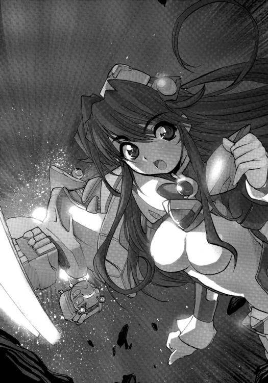
キスカなら、今は第一級戦闘態勢だぞ、と規則どおりに言っただろうが、補修員たちの出番は戦闘終了後にやってくるのである。
それまで休息していなかったら、作業効率は悪くなるし、事故が起こる危険性も増す。香月艦長補の判断は、徳山たちを思いやっただけではなく現実的でもある。
（あいつらしいな）
タカイはニヤリとする。
そして、
「いつ反撃できる？」
と、ユキノに訊ねた。
「あと七分で、主砲の射程圏内に入ります」
ユキノが事務的な口調で報告を行った。戦闘がはじまり、さすがにその表情は真剣である。
「了解！」
二隻に分裂した敵艦からは、次々とプラズマキャノンが発射されてくる。だが、速射性能は劣るのか、発射間隔はそれほどでもない。
だが、チョップスティックＡからの四発目の攻撃が直撃し、アマテラスは激しく揺れた。
「直撃、受けちゃったよ！」
ユキノが悔しそうに叫ぶ。
「イマリ、被害状況のモニターを頼む。カタログどおりなら、問題ないはずだがな」
「......大丈夫、命中箇所の多機能装甲板は破損したみたいだけど、船体には影響ない。排熱も順調に進んでいる」
アマテラスには、着弾した箇所の熱的損傷を熱伝導ファイバーで拡散し、熱変換光素子ホタルで排熱するという最新式の耐熱防御システムが搭載されているのだ。
アマテラスの艦体が、その名の由来である太陽の女神が降臨したかのように純白の光で包まれてゆく。
「やばい！ 盾にも被弾した!!」
ユキノがふたたび大声をあげる。
「サンリ！ 大丈夫？」
イマリが個人用モニターに船外カメラに映る巨大な盾の様子を映しだしながら訊ねる。
「──わたしは、大丈夫。でも、アレイさんが着弾の衝撃で弾かれちゃって......」
「──油断した！ 盾と接触して艇が損傷したらしい。今、被害を調べているけど、機能に問題はない」
アレイは悔しそうに言うと、作業を続行すると続ける。
だが、その三〇秒後──
「盾にまた直撃弾！」
ユキノが悲鳴をあげて、そのまま言葉を失う。
敵弾が連続で命中したのである。
「思ったより、余裕ないかもな......」
タカイがチイッと舌打ちをした。
「タカイ～、一発で決めてくれ～！」
ユキノが泣きそうな声をあげる。
「でないと、サンリたちが......」
「無茶を言うなって！」
タカイは目を細めながら、照準装置の中央に捕らえている敵艦の映像を凝視する。
「だが、三発以内には絶対に決めてやる。それまで盾が保てばいいってことだ」
タカイは自分自身に言い聞かすようにつぶやいた。
「方向転換する時間も忘れないでよ」
ユキノが念を押すように言う。
大型の万能艦であるアマテラスだが、大きな欠点がふたつある。
そのひとつがステルス性能であり、艦からは常時、様々な放射が行われている。なにしろ、巨大な重粒子加速器を稼働させているのである。
そしてもうひとつが旋回性能だった。艦を一八〇度回頭させるには、分単位の時間がかかる。
「被害報告を聞いていると、気分が滅入る。ユキノ！ 主砲発射のカウントダウンを開始してくれ！」
「りよ、了解。主砲発射まであと一五〇秒......一四〇秒......」
ユキノはモニターに表示されるデータを監視しながら、刻々と変化する数字を読みあげてゆく。
そのあいだにも、タカイは照準装置を細かく動かしながら、敵艦の回避運動を観察しつづける。
運動性能が悪いのか、敵艦の姿が照準装置の中央から大きくぶれることはなかった。
（二発で決めてみせる！）
タカイは自分に言い聞かせる。
アマテラスの照準装置も主砲も、これまでの戦闘で期待以上の性能を示している。
破壊力だけでなく、命中性能も抜群だ。もっとも、有効射程距離はカタログデータよりも短いことが判明している。直径四六〇〇ミリものプラズマスフィアを長時間（といっても数秒だが）安定させるのは無理があるらしい。
キスカはそれが気に入らないらしいが、タカイは満足している。砲術士にとっては、攻撃が外れるということがストレスなのだ。
「主砲発射まで、あと二〇秒......一〇秒、九、八......」
ユキノの声ははっきりと震えている。
カウントダウンが始まってからは、アマテラスにも盾にも直撃弾は受けていない。立て続けに三発が命中したのであわてたが、運が悪かっただけかもしれないとタカイは思った。
「......五、四、三、二、一！」
「主砲発射！」
タカイはそう声に出し、トリガーをひいた。
原子量三〇〇前後という超重原子を媒質とする巨大なプラズマスフィアが、亜光速で宇宙空間を走る。
「......第一弾、はずれました。右におよそ一五〇メートル」
イマリがかすれたような声で報告する。
「了解した。だいたい予測どおりだ。ただちに第二弾の発射準備。カウントダウンを再開してくれ！」
「──盾の排熱が間に合っていません。およそ五分後には盾は溶融します」
「──了解しました。着陸艇、作業艇はただちにアマテラスに帰還してください。もう一発、直撃を受けたら、もう保たないでしょうから」
サンリの報告に、第一艦橋の香月シノンが答えた。
即答だったので、またも艦長である神崎キスカの判断は仰いでいないだろう。乗員の安全をなにより大事にする彼女らしい返答だった。
（それにしても、さすがだな提督......）
タカイは心のなかで、シノンに呼びかけた。
多機能装甲板の盾がなかったら、チョップスティックＢのプラズマキャノンがアマテラスに直撃していたかもしれない。
サンリたち小型艇の操縦員、そして徳山タクミら船外作業員の尽力があればこそだが、やはり計画を発案した香月シノンには感心させられる。
（オレも、やるしかないよな）
タカイは心のなかでつぶやくと、ユキノのカウントダウンがゼロになるのをじっと待つ。
そして、そのときがやってくる。
「第二弾発射！」
タカイは発射トリガーをひくと、叫ぶように言った。
照準装置を握る右手には、確かな手応えを感じている。これもオカルトだが、命中するときは、トリガーをひいた瞬間にそう確信できるものなのだ。
そして数秒後、タカイの予感は、現実となる。
アマテラスの主砲は敵艦を直撃し、艦首に大爆発を起こし、溶融させていったのである。
「──これで勝ったわ！」
その瞬間、シノンの歓声が第二艦橋に大きく響いた。
「──攻撃目標をチョップスティックＢに変更してください。神の盾は放棄。自動回避プログラムを実行してください」
シノンは興奮を抑え切れない声でそう続けた。
アマテラスが受けた直撃弾はまだ一発だけ。正面からの撃ち合いなら、絶対に負けないと彼女は確信しているのだろう。
タカイも、まったく異論はなかった。
（どうやら、今回も生き残ることができそうだな）
タカイは大きく一息ついたあと、もう一度、精神を集中させてゆく。
もう一隻の敵艦が沈没したのは、それから一〇分後のことであった──
７
高速攻撃艦マリアナの艦橋のメインモニターには、双胴遊撃艦ミュライのレフトサイドが爆沈している映像が、映しだされていた。
艦橋には重苦しい沈黙が流れ、人々は沈みゆく僚艦の姿を見つめている。
自由護衛艦アマテラスに沈められた同盟の戦闘艦は、これで五隻めになる。
「アマテラスめ！」
艦長席のアームを握りしめ、ルイス・ベルモントは歯嚙みをした。
その顔は今にも火を噴きださんばかりに赤黒くなっている。
「提督......」
この作戦からマリアナの副艦長に就任したヤオ・ウェン大佐が、ベルモントに声をかける。
「残念ながら、油断したというしかありませんな。双胴遊撃艦ミュライを失った責任は、まぬがれないものと思っていただきましょう」
「ミュライが沈んだのは、わしのせいだと言うのか？」
ベルモントは副艦長を睨みつける。
「はい......」
ウェンは、静かにうなずいた。
「若造！」
ベルモントは艦長席から立ち上がると、ウェンに歩みよる。
「アマテラスは停戦の合意を破って、攻撃をしかけてきたのだぞ！ わしは参謀本部の作戦に従ったまでだ」
「停戦はＡＧＩおよび連合と我が同盟とのあいだで結ばれたものです。アマテラスは連合には正式に加盟してはいません。彼らが合意を破ったのではないのです」
ウェンは肩をすくめた。
「貴様、誰に向かって！」
ベルモントは怒鳴ると、ウェンに向かって拳を振るった。
だが、ウェンは椅子に座ったまま、その拳を簡単に受けながす。彼は中国系の古式拳法をマスターしているのだ。
「小官は副艦長ですので、艦長の判断に異論を唱える権利を有しています。その権利を剝奪する権利はあなたにはありません。すでに報告は、ペリエ閣下のもとに届いております。あとの判断は閣下がなされるでしょう......」
ウェンはそう言うと、ゆっくりと席を立った。
「親衛隊が立案した計画だろう。その失敗をわしになすりつけるつもりか？」
ベルモントは激昂し、声を震わせる。
「親衛隊などという組織は、我が同盟軍には存在していません。また参謀本部の立案した作戦は戦場において臨機応変に対処することを前提としています。そのために、提督がおられるのではありませんか？ 作戦計画をそのまま遂行するだけなら、小官で十分です」
「貴様......」
ベルモントは睨みつける。
「ならば、作戦を変更しようではないか。我が艦はこのままＡＧＩの宇宙港に対し、攻撃をしかける。アマテラスの行動は、あきらかに連合とＡＧＩの承認のもと行われたのだ。ＡＧＩはその制裁を受けなければならん」
「提督......」
ウェンは失望の表情を浮かべる。
「作戦はすでに終了しております。インカ宇宙港への攻撃判断は、ペリエ閣下に委ねたほうがよいと思います。承認されるとは思えませんが......」
「小僧の承認など必要ない。オーギュスト・ペリエ最高会議議長こそが、わしに唯一、命令できる人物なのだ！」
「正気ですか？」
ウェンはベルモントを見つめる。
「議長閣下が病床のあいだ、その権限は議長代理閣下に委譲されています。それを最高会議の席で提案したのは、他ならぬ提督ではありませんか？ 今の言葉は、残念ながら同盟軍に対する反逆罪に相当していますな」
「反逆だと？ このわしがか？ 議長閣下に忠誠を誓い、同盟を支えてきたのは、誰だと思っている？」
「小官には関係のない話ですな。小官はただ議長代理閣下の命令に従って行動しているにすぎません......」
「このマリアナの艦長はわしだ。おまえこそ、わしに反逆しているではないか？」
ベルモントはそう言うなり、腰のホルスターに収めていた拳銃を抜いた。
「死ねっ、若造！」
ベルモントは嘲笑しながら、拳銃を発射しようとした。
しかし──
拳銃を握る彼の腕を、ウェンは電光のようにつかむと、捻り上げた。
何かが折れたような音が響き、ベルモントの手首の関節は普通ではありえない方向に曲がっていた。
拳銃の発射音が響いたが、弾丸は天井に向かって飛び、緩衝材に突きささる。
「諸君らはありのままを、軍事法廷で証言してくれたまえ」
ウェンは大声で言うと、ベルモントの手から拳銃を取り上げ、彼の額に押しつけた。そして躊躇なく、トリガーをひいた。
ふたたび発射音が響き、高速攻撃艦マリアナの艦長ルイス・ベルモントは血と脳漿を艦橋にぶちまけながら、床に倒れた。
「今は、加速中でよかったよ。無重力状態だったら、想像もしたくない事態になっただろうからな......」
ウェンは冷ややかに言うと、拳銃から弾倉を抜き、ベルモントの死体のうえに投げ捨てる。
「進路はそのまま、ワープ可能領域まで向かう」
ウェンはそう宣言すると、何事もなかったかのようにマリアナの艦長席に腰をおろした。
艦橋勤務の乗員たちは、強張った表情で、新しく就任した副艦長を見つめる。
「......ベルモント提督は敗戦の責任を取って、自決された。これは提督の名誉を守るためなのだ」
乗員のひとり、砲術長が震える声で言った。
「諸君らが見たとおりだ......」
ウェンは平然としている。
査問にかけられても、自分が罪に問われることはないという確信があるからだ。
しかし砲術長が言うとおり、査問にかけられて名誉を失うのは、ベルモントのほうである。
「おとなしくスパルタへと帰っていたら、静かな退役生活がおくれたものを。老兵は死なず、という言葉を彼は知らなかったのかな......」
ウェンは冷ややかにつぶやいた。
そして、
「作戦終了......」
と、ポツリと続ける。
彼がマリアナの艦長に就任し、同時に最高会議のメンバーになるのは、もはや決定事項だろう。
（消えてもらわねばならぬ老兵は、同盟にもまだまだいるがな......）
オペレーション20 エンパイア・ストライクス・バック
１
西暦二三〇一年一月三日 インカ星系第四惑星軌道付近──
「チョップスティックＢ、機能を停止しました」
自由護衛艦アマテラスの第一艦橋に、主任観測員である秋里ミユリが安堵の声をあげる。
「〝神の盾作戦〟終了。第一級戦闘態勢解除。このまま、ワープ可能領域まで航行する。敵艦の追撃には注意してくれ」
艦長である神崎キスカが、安堵の表情でつぶやく。
「敵艦隊は散開し、この星系から脱出しつつあります。連合の艦隊も同様です」
ミユリがそれに答えた。
（今回も生き残ることができた......）
ふたりの会話を聞きながら、艦長補佐である香月シノンは心のなかでつぶやいていた。
安堵感はあるが、じわじわと罪悪感もこみ上げてくる。
メインモニターの主映像は二分割され、小爆発を繰り返しながら溶融してゆく二隻の敵艦の映像を捕らえている。
おそらく数百人の乗員が乗っていたはずだ。そして脱出はひとりも確認されていない。
（戦争が終われば、戦死する人もいなくなるのに......）
王国──ヘンリエッタ星域惑星同盟は、戦争をやめるどころか、その行動はますます大規模になりつつある。
五隻もの戦闘艦をこの星系に派遣し、星間企業であるＡＧＩ──アリマ・ジェネラル・インダストリ──に圧力をかけてきた。
ＡＧＩはその圧力に屈し、アマテラスに対する直接支援を打ち切らざるをえなかった。
今後、アマテラスの支援は、補給班長であった荻野セイが指揮する補給艦ツクヨミが担当することになる。
彼女が艦からいなくなって、顔色を変えているのは、新しく補給班長となった北条ユウだ。
それも当然だろう。これまで頼りにしていた上司が、いきなり手強い取り引き相手になるのだから......
「全艦、第三級戦闘態勢に移行。各部署、第二班は通常任務、第三班は待機、第一班は休息。通信担当を第二艦橋と交替します」
作業艇の操縦から帰ってきたばかりの氷坂アレイが、アナウンスをする。
すると、
「──神崎艦長、そして香月艦長補、申し訳ありませんが、お時間をいただけませんか？」
第三艦橋勤務の星間気象観測員であり、アマテラスの報道官も兼任している間宮リオの声が第一艦橋に響いた。
サブモニターのひとつに、彼女の愛らしい顔が映っている。戦闘に勝利したあとだというのに、その表情は冴えないように見えた。
「香月艦長補......」
キスカが複雑な表情をシノンに向ける。
彼としては、一分一秒でも早く、リオとふたり切りになりたいところだろう。
だが、今後の方針を決定せねばならない。
「承知しました」
シノンはうなずいた。
「ツクヨミの荻野艦長に連絡を取って、ランデブー座標および速度、進路を決めてくれ。今回の作戦では、大量の多機能装甲板を失っているからな。すぐに補給しないと、次の作戦に支障をきたす」
キスカは言うと、艦長席から立ち上がった。
今は１Ｇ加速の状況にあるので、普通に床に立ち、歩くことができる。
シノンもヘッドセットを外して、彼に続いた。
第一艦橋の隣にある作戦会議室へと移動するのだ。重要な決定はここで行うことが多い。
作戦会議室へと移動し、一〇分ほど待つと、リオが姿を現した。
キスカは笑顔になるが、彼女は表情を変えずに会釈だけで返す。
「王国のヘルマン報道官が声明を発表し、わたしたちと連合、そしてＡＧＩを非難しているわ。ＡＧＩの反応も早くて、すぐに記者会見を開き、アマテラスへの直接支援は打ち切っているので、アマテラスの行動は一切、ＡＧＩとは関係ないこと、逆にアマテラスに今回の作戦行動の自粛を要請する権利もなかったと発表している。ま、正論よね」
リオはシノンの隣、キスカの向かいの席に着くと、そう話を切りだした。
隣に座ってくれることを期待していたのだろうか、キスカが一瞬、顔をしかめる。
「連合所属の惑星国家はなんて？」
シノンがリオに訊ねる。
「各国首脳が声明をだすと思うけど、もうすこし時間がかかるかもしれない。おそらく水面下で様々な外交交渉が進行しているはずよ。無論、伯父様も動いておられるわ」
リオが苦笑をもらす。
「今回の作戦が必要だったことは認めているけど、危険な賭けであったというのも確かだわ。ジャンヌ・ダルクのルブラン提督は、さぞご立腹でしょうね」
「あの人がいくら怒ろうとも気にしないけど、連合の艦隊の他の艦長たちには悪いことをしたと思う。無理矢理、共犯者にしたてたわけだものね......」
シノンは申し訳なさそうにうなだれる。
「このあとの記者会見で、今回の作戦は連合の承認のもとに行ったわけではないけど、連合の艦隊の存在があってこそ取り得たと発表するわ。そして連合各国に謝意を表明し、今後は緊密に連絡を取り合い、協力したいともね。連合が味方してくれるかどうかは微妙だけど、王国の敵ではいてもらわないと」
リオはそう言うと、微笑みながらシノンの肩に手をかけた。
「厳しい状況だったけど、よく切り抜けてくれたわね。今度こそ駄目かと思ったけど......」
「一隻の敵艦が二隻に分裂しただけで、それぞれの性能が高くなかったからなんとか勝てたけど、普通に二隻の戦闘艦を相手にしていたら厳しかったと思う。盾が、たぶん保たなかったでしょうね」
シノンはため息をついた。
今回はからくも勝利したが、複数の敵艦とまともに戦えば、苦戦するということもはっきりした。
「ともかく、連合は新しい戦力を手に入れたわけだから、この星域での戦力バランスは大きく変化したはずよ」
リオがモニターテーブルを見つめながら、ポツリとつぶやく。
「最新鋭の戦闘艦が四隻だものね。自国を防衛しながら、王国の領土へだって侵攻できる」
シノンがうなずく。
「王国は多数の戦闘艦を擁し、新鋭艦も建造中だと思うけど、星系防衛任務や経済制裁のため、動きのとれない戦闘艦も多い。アマテラスを含めて、五隻の艦隊で行動すれば、王国の戦闘艦を一隻ずつつぶしてゆくことだって難しくないんだけど......」
「現実には無理ね。連合は一枚岩じゃないし、惑星国家ガリアは、王国を容認しようとしているのでしょ？」
「ルブラン提督の言葉が、惑星国家ガリア政府の意向どおりならだけど......」
シノンは首を横に振る。
惑星国家ガリアは完成した四隻の戦闘艦を抑止力に用い、王国と連合との戦争を終結させようと考えている。
（でも、王国の新しい指導者が、それに応じるかどうか......）
国王と呼ばれた惑星国家同盟最高会議議長オーギュスト・ペリエが病に倒れ、現在は息子であるミシェル・ペリエが議長代理として王国の指導者となっている。
そして、この二代目の国王の行動は強硬だ。
ＡＧＩが所有する宇宙港を特殊部隊に襲撃させ、五隻もの艦隊を派遣し、アマテラスの直接支援を打ち切る約束をＡＧＩから取りつけた。
しかし、戦闘艦一隻を失うという結果となったわけだから、王国が支払った代償も小さくはない。
こうして一枚一枚、戦力をはぎとっていけば、王国を窮地に追いこめることができるはずだが、先は長いというしかない。
「ワープ可能領域まで、およそ五日間。それまではゆっくり休息しましょ。ま、銀河ネットはそれを許してくれないでしょうけど」
リオはそう言うと、席を立った。
「わたしは、これから伯父様のところへ行ってくるわ」
「わかった......」
シノンはリオにうなずく。
「また、あとでね」
何かを訴えるような目でキスカが見つめているのに気づいて、リオが苦笑する。
「部屋で待っていて......」
そして小声でキスカに耳打ちする。
しかし、狭く静かな室内でもあり、シノンにもリオの言葉は聞こえた。
シノンは真っ赤になって、ふたりから視線をそらす。
不思議に思うのだが、キスカとリオは恋人どうしなのだ。
（コウキは今は、当直よね）
シノンはふと機関長の顔を思いだす。
彼はいちばん親しい異性の友人で、一緒にいると心が安らぐ。だが、これが恋かどうかは自分でも分からない。
（ミユリの部屋に押しかけよ）
疲れているし、睡眠不足ではあるが、神経が高ぶっていて、とてもすぐには眠れる気がしない。狭いベッドにミユリと一緒に入って、子供の頃の思い出話でもしようと、シノンは心に決めた。
２
西暦二三〇一年一月八日 ヘンリエッタ星域星系外宇宙空間──
インカ星系で行われた宇宙海戦から五日後、自由護衛艦アマテラスはインカ星系を離れ、恒星系のない宇宙空間にワープアウトしていた。補給艦ツクヨミとランデブーし、補修作業を行うためである。
今回の戦闘では、船体や船外機器に被害はなかったものの、大量の多機能装甲板が失われており、アレイが操縦していた小型艇も破損している。
ざっと一〇〇億円近い損害額だ。
「わたしたちを儲けさせてくれるのは、ありがたいのだけど......」
補修作業のため、アマテラスに乗船してきた元補給班長の荻野セイが、神妙な顔をしている香月シノンに向かって苦笑まじりに言った。
「ごめんなさい......」
シノンはしおらしく頭を下げる。
作戦を立案するときは、費用のことなど頭からさっぱりと消しているのだ。
「北条君も大変だわね」
セイは後任者の苦労を思い、心のなかで同情しておいた。
ＡＧＩとの直接取り引きだったのが、セイが起業した新会社が介在することになる。中間マージンが乗るわけで、補給物資の価格も上昇する。
セイ個人は資産を増やすつもりはないが、危険を冒して参加してくれた乗員の給与を抑えるわけにはゆかない。
彼らには年間一億円を超える報酬を約束している。前渡しはすでに支払い済みで、残りは契約終了後、あるいは死亡時に支払う予定だった。
「北条くん、計算は得意だけど、交渉は苦手みたいで、女子のひとりを銀河ネットの担当にあてると言ってたわ」
「ま、それが無難でしょうね」
シノンの言葉にセイはうなずいた。
「それより、これからどうするの？ アマテラスは次の目的地も決まっていないんでしょ？」
「お教えできません」
シノンは申し訳なさそうな表情で、首を横に振る。
「そうよね。余計な詮索だったわ」
セイは気分を害した様子もなく、そう答えた。
ツクヨミの乗員のなかに、王国のスパイが入っている可能性もある。秘密というものは、知らなければ洩らしようもないのだ。
「ごめんなさい......」
「気にしないで、わたしはもうアマテラスの人間ではないのだから、それで当然よ」
セイは笑顔で答えて、シノンに手を振った。
「戦争終わって、お互い生きていたら、ゆっくりお茶でも飲みましょ」
セイはそう言うと、補修作業を監督するために、その場を立ち去る。
「うん、誘ってね」
シノンはセイの背中に小さく手を振り返した。
（生き残ろうね、セイ......）
そう呼びかけたあと、シノンは提督室へと足を向ける。
そこで緊急のミーティングが行われることが決まったからだ。
参加するのは、艦長とふたりの副艦長、報道官の間宮リオと艦長補佐であるシノンの五人だ。そして、当然、提督室の住人である惑星国家キビ亡命政府元首の間宮タツマが加わる。
珍しいことに、間宮元総理のほうから招集があったのだ。
普段の彼は、要望があるときは姪であるリオを通じてだす。しかし、それもめったにないことだ。
ひたすら外交交渉を繰り返し、情報収集を行っている。
アマテラスがここまでやってこられたのは、彼の外交手腕によるところが大きい。
学生だけでは、軽く見られて、どこの政府も相手をしてくれなかったはずだ。
（それにしても、なにがあったんだろ？）
シノンは首をかしげる。
タツマの個人ルートで、極秘の情報でも入ったのだろうか。そしてそれは、アマテラスにとって重大な意味を持っているはずだ。
（ま、行ってみれば分かることだけど）
時間に余裕があったので、シノンは補修作業のため、アマテラスに乗艦していたセイに会いにきたのだ。
艦は慣性航行しているので、通路は無重力だ。シノンはグリップにつかまって、廊下を移動する。普通に歩くより遙かに速い。寄り道はしたものの、提督室には指定の時間の一〇分前には到着していた。
入口の前には、桐生タカイの姿があった。
今は第三班が当直なので、第二班は休息時間である。普段なら、トレーニングルームでフィジカルトレーニングをしているか、食堂で飲み会をやっているはずだ。
「ご苦労さん」
タカイが気さくに声をかけてくる。
「ご苦労さまです」
シノンも笑顔で答えた。
「先日の戦いではありがとうございました。二発目で直撃させていなかったら、あぶないところでした」
「ああ、二発目で直撃したな......」
タカイはまるで他人事のように言うと、思案するような表情を見せる。
意外な反応だった。
「なにか気になることでも？」
シノンは怪訝に思い、タカイに訊ねた。
「ちょっとな、ひっかかっていることがあって......」
タカイは言葉を濁す。
それも彼らしくない反応である。
「ひっかかってること？」
シノンは問いかえす。
「まさか、サンリのことじゃないでしょうね」
「彼女とはうまくやっているさ。このまま、なし崩しに結婚させられそうなぐらいだ」
タカイは苦笑をもらす。
「サンリ、良い娘じゃないですか？ 幸せにしてあげてくださいよ」
シノンは冗談めかして言ったが、無論、本気だ。彼女を不幸になどしたら、絶対に許さないと思っている。
「分かってるって......」
タカイはため息をつくと話題を変えた。
「香月は、たしか結城科学士官と仲がよかったよな？」
「仲がいいかどうかは分かりませんが、ときどきメールを交換したり、電話をしています。それから、結城科学士官は人工脳制御室に閉じこもりがちなので、ミユリと一緒に食事に誘ったり、トレーニングルームや医務室に連れてゆくこともあります。この艦には、彼の代わりはいないのですから、健康には気をつけてもらわないと......」
「十分、仲がいいじゃないか。他の乗員は間宮元総理と同じくらい、彼には遠慮しているからな」
「間宮元総理には、リオがついていますが、結城科学士官には誰もいませんから。普段の彼は年齢どおりで、弟みたいに可愛いんですよ。ミユリとふたりで玩具にしているときもあるぐらいで......」
シノンは笑顔で言ってから、話題がずれていることに気づいた。
「結城科学士官に、なにか御用ですか？」
「ああ、いろいろと訊ねたいことがあるんだ。まあ、技術的な質問なんだが......」
「わたしから、訊ねておきましょうか？」
「いや、香月にそこまでしてもらっちゃ申し訳ないからな。自分で行くことにするわ」
「そうしてあげてください」
シノンは笑顔で言った。
「結城科学士官も喜ぶと思いますよ。哲学とか高等数学の話とか、難しい話題がでると思いますが......」
「それは覚悟がいるな......」
タカイは渋い表情になった。
「ところで、結城科学士官は自分のことをなにか語ったりするかな？」
「いえ、聞いたことはありません。わたしたちも話題にしませんし......」
シノンも、彼の経歴については疑問に思うことも多い。だからこそ、話題にしなかったということもある。
プライベートなことでもあるし、機密に属することもあると思ったからだ。
「そうだな、そういう話は本人からするものだ。興味半分に他人が踏みこんでいいことじゃない......」
タカイは納得したように大きくうなずいた。
「それにしても、香月は意外に優しいよな」
「意外には余計です」
シノンは一瞬、ムッとする。
「それに、優しいかどうかも......。嫌いな人には容赦ありませんし、こうして戦争にも参加していますから」
本当に優しい人間というのは、父のような人のことだと、シノンは思っている。
（あの人は決して怒らないし、他人を傷つけるようなことも絶対にしないもの......）
シノンの脳裏に浮かぶのは、父の笑顔と悲しそうにしている顔だけだ。怒った顔など、記憶にまったくない。物心がつくまでには、たぶん叱られたこともあっただろうが......
そのとき、キスカとリオ、そしてシントの三人が一緒にやってきた。
時計を確かめてみると、ちょうど定刻である。
五人はうなずきあうと、代表して神崎キスカが提督室の扉を叩いた。
すぐに許可があって、彼らは提督室へと入ってゆく。
そして、惑星国家キビ亡命政府元首である間宮タツマからひとつの提案を受けることになる。自由護衛艦アマテラスの進路をキビ星系に向けろとの──
３
自由護衛艦アマテラスの第一艦橋は緊張した空気に包まれていた。
艦長である神崎キスカが、マイクを手に思案の表情をしている。
香月シノン、氷坂アレイ、秋里ミユリの三人がそれを不安そうに見守っていた。
「アマテラスはこれより、進路をキビ星系に向ける......」
キスカはいつになく慎重な口調で、マイクに向かって言った。
その瞬間、シノンには全乗員がどよめくのが聞こえたように思った。
（みんな、きっと驚いただろうな）
艦長の発言内容を事前に知っていた彼女でさえ、キスカのアナウンスを聞いた瞬間、全身に震えが走ったぐらいである。
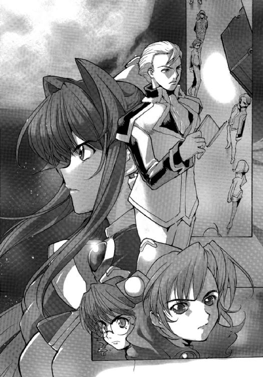
キビ星系まで二回の跳躍、一〇日あまりの宇宙航海となる。
「これまでキビ星系には、三隻の宇宙戦闘艦が駐留していた。しかし、そのうちの二隻が、星系外へとワープアウトしていったとの極秘情報を我々は入手した。つまり今、キビ星系には一隻の宇宙戦闘艦しか駐留していない......」
キスカはそう言うと、しばらく言葉を切った。乗員たちがその真の意味を理解するまで時間的猶予をおいたのだ。
「我々は、キビ星系に駐留する王国の戦闘艦を一対一の戦いで撃破し、惑星国家キビをいったん解放する。それがどのような効果をもたらすかは、まったく予測できない。我々は任務を成功裏に終え、このアマテラスから降りることになる可能性さえある。しかし、危険がないわけではない。駐留している敵戦闘艦に勝利しなければならないのは当然のことだし、王国が我々を罠にかけようとしている可能性もある。それでも、ボクはキビ星系へと進路を向ける決定をくだそうと思う。この航海は、自由護衛艦アマテラスの運命を左右することになるであろう。各員のいっそうの奮励に期待する。以上だ......」
キスカはマイクのスイッチをオフにすると、深いため息をついた。
「お疲れさまです」
シノンが艦長を振り返って、久しぶりに営業用ではない本物の笑顔を彼に向けた。
間宮タツマから呼び出され、彼が極秘のルートから入った情報をもとに、キビ星系へ向かうか否かの決断を迫られたとき、キスカは迷うこともなく、この決断を下したのだ。
「どうなるかな？」
アレイがモニターを見つめながら、低くつぶやく。
「王国がどう動くかでしょうね。一時にせよ、わたしたちがキビ星系を解放したら、彼らにとっては大失態のはずだもの。たぶん、複数の戦闘艦が派遣されてくると思う。また、どこかへ逃げだすしかないでしょうね......」
「王国より、キビ政府と国民の反応のほうが、あたしは心配......」
ミユリが不安そうな表情で言った。
「キビ政府は、わたしたちを命令違反で訴追しているし、亡命政府も認めていない。だけど、世論は我々を圧倒的に支持している。自衛隊は解散されたけど、警察組織は生き残っているわ。王国は地上軍を派遣してきているけど、配置されているのは、宇宙港と政府機関ぐらいだしね」
「王国は宇宙港さえ抑えておけば、どの惑星国家も屈服できると思っているからな。実際、輸入が止まれば、どの惑星国家も成りたたない......」
キスカが珍しくシノンたちの会話に加わってきた。彼も興奮を抑えられないのだろう。
「しかし、キビ星系に一隻の戦闘艦しか駐留させていないという事実が、王国の現状を示しているとボクは思う。連合が完成させた新しい戦闘艦にも備えなければならなくなったし、アマテラスが撃破してきた戦闘艦の補充も進んでいないんだろう」
「そうでないと、わたしたちが命がけで戦ってきた意味がありません」
シノンはキスカに答えたあと、静かに目を閉じて、これまでの戦いに思いを巡らせた。
楽な戦いなど一度もなかった。
しかし、これまでなんとか勝ち続けている。
アマテラスの性能が優れていたからだし、運にも恵まれたのだろう。
しかし、アマテラスの乗員も、本当にがんばってきた。苦しい状況にも堪え、最後まであきらめることがなかった。
生き残れたのはだからこそだと思う。
「補修作業が終わりしだい、キビ星系に出航する。全艦に準備をはじめるよう伝達してくれ」
キスカはそう言うと、艦長席から静かに立ち上がった。
第一艦橋のスタッフは、今は待機時間である。通常任務は、六時間後からはじまる。
キスカの命令を主任通信員の氷坂アレイが全艦に伝達し、当直である第三艦橋に指揮権を返した。
そしてシノンたち三人のオペレーターも第一艦橋をあとにする。
補修作業の終了予定時間は八時間後。それから、アマテラスの運命の航海がはじまるのだ。
４
「今のキスカ君の放送、なかなかよかったわね。ライブで放送できないのが残念だわ......」
スターシップ・チャンネルのメインキャスターであるディータ・ミルコフはそう言うと、エグゼクティブ・プロデューサーのピーター・スパイクスの裸の胸を指でなぞった。
「あとで特番にまとめるさ。ライターが書くと、演説という奴はどうも味気なくなる。そのときに、そいつにしか出せない言葉ってのには、勝てるわけがないのさ」
スパイクスはベッドのうえで上半身を起こしながら、携帯用モニターで明日放送予定の番組をチェックしている。
惑星国家ガリアにあるヘンリエッタ星域の支局には優秀なスタッフが集まっていて、スパイクスが指示を出さなくても、チャンネルは動くようになっている。
期間限定のチャンネルではあるが、加入者は世界規模であり、毎月の視聴料だけでも国家予算に匹敵する。それにチャンネルから派生する二次商品の売り上げやロイヤルティーが加わる。
アマテラスの馬鹿みたいな金額の運用費を差し引いても圧倒的な黒字だ。
（まあ、ピークはすぎたみたいだがな）
スパイクスは苦笑をもらす。
もともと最大三年で考えていたチャンネルなのだが、早く人気が出すぎて寿命は短くなったかもしれない。
（問題はどう終わらせるか、だな......）
チャンネルに対しては様々な批判や圧力がかかってきている。
報道の自由の原則を盾に、めったなことではチャンネルを打ち切ることのない銀河ネットの倫理委員会も重い腰をあげるかもしれない。
「なにを考えているの？ 悪人の顔になってたわよ」
ディータがそう言って、クスリと笑う。
「どうやって、この艦に沈んでもらうのがいいか考えてたのさ」
スパイクスは真顔で言う。
「チャンネルを終わらせるには、それがいちばん簡単だからな」
「あら、そうしたら、わたしたちも死んじゃうじゃない？」
それは困るわ、とディータは不安そうに胸に手をあてる。
彼女も裸で、豊かな胸の丘が揺れる。
「オレたちはそれより前に、艦を降りるさ。金は十分に稼いだからな」
スパイクスは銀河ネットとロイヤルティ契約を結んでいる。純利益の一パーセントというものだが、今やそれは莫大な金額になっている。
「そう言えば、別れた奥さんには慰謝料は払ったんだっけ？」
「ああ、たっぷりと利息をつけてやったさ」
ディータの言葉に、スパイクスが顔をしかめる。
「あの女、このチャンネルが成功していることを知って、慰謝料の額をつり上げてきやがったがな。向こうの弁護士も、呆れていたぜ」
「女はね、好きな男から愛情かお金かのどちらかが欲しいものなのよ。できれば、両方だけどね......」
ディータがくすくすと笑う。
「まったく欲深い生き物だぜ」
スパイクスは吐き捨てるように言う。
「あの女も結婚するまえは、純情に見えたのさ。だが、いい暮らしをさせてやったら、なにかを勘違いしやがった。まるで自分が成功を約束された女みたいに思い上がってな」
「おお、怖い......」
ディータは冗談っぽく言って、首をすくめる。
「オレはあいつには、なにひとつさせなかった。仕事の手伝いも、家事もな。セックスだって三年で二〇回はしていねぇ。だが、オレに女がいると知った瞬間、あいつはオレの財産のすべてを要求しやがった。そして裁判所はそれを認めた。あいつはオレとの結婚届けにサインをし、三年間遊び暮らしただけで、一〇億円近い資産を自分のものにできたわけさ。そして別れてからのオレの稼ぎにも、取り分を要求してきやがる......」
「世の中、男に泣かされる女のほうが圧倒的に多いんだから、そういう女の人もいてくれないと不平等ってものだわ」
「とんだ平等だな......」
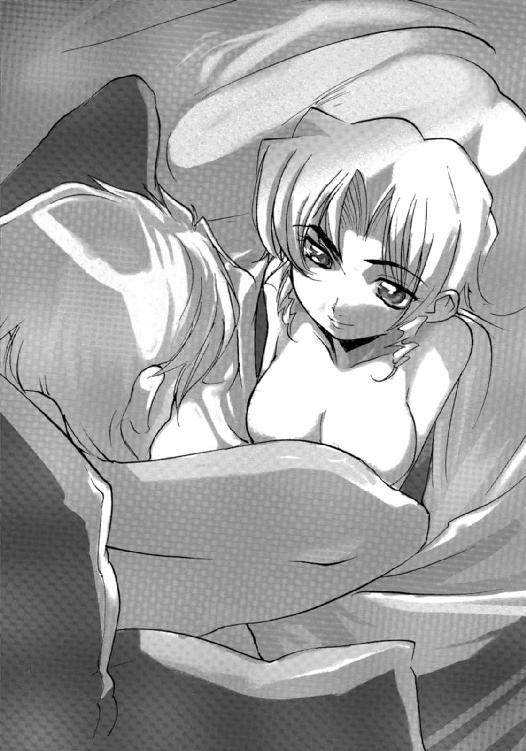
スパイクスはぶつぶつとつぶやく。
「この艦には、いい娘、多いじゃない。通信制御室の彼女とは、その後どうなの？」
「さあな......」
スパイクスはとぼけたように言うと、ディータを抱きよせた。
「おまえには本当に感謝している。命がけの仕事だったというのにな......」
「感謝しているのはこちらのほうよ。キャリアの最後に、夢だった報道の仕事をさせてもらったから......」
ディータはそう言うと、スパイクスの頰にキスをする。
「この仕事が終わったら、銀河ネットから本当に降りちまうのか？ まあ、一生遊んでゆけるぐらいのギャラは渡したからな」
スパイクスはディータのしなやかな肢体を右手で確かめながら、ふと寂しそうな表情を見せた。
「......だったら、オレと暮らしてみるか？」
その言葉に、ディータは硬直したように動かなくなる。
そしてしばらくして、大きな笑い声を響かせた。
「......あなた、わかっていないわね。前の奥さんで、女はこりたんじゃないの？」
「まぁな......」
スパイクスは馬鹿にされたのかと思い、憮然とした表情で、ベッドの脇に固定してあるボトルからウィスキーを一口、あおった。
「だが、おまえはあいつとは違うだろう？」
「もちろん、違うわ......。だけど、あなたと一緒に暮らしたら、わたしも前の奥さんと同じになりそう......」
だから遠慮しておくわ、とディータは微笑んだ。
「だけど、もしもあなたがこの仕事をやめる気になったら、そのときには声をかけて。からっぽになったあなたの面倒なら見てあげるから......」
ディータはそう言うと、スパイクスの口を自らの唇で塞いだ──
５
アマテラスがキビ星系に出現したのは、インカ星系における宇宙海戦から一七日めであった。
そのニュースは、スターシップ・チャンネルで緊急報道され、ヘンリエッタ星域をはじめ、全世界を駆けめぐった。
「議長代理......」
ヘンリエッタ星域惑星国家同盟の報道官ハンス・ゲオルグ・ヘルマンは緊張した面持ちで、ミシェル・ペリエ同盟宇宙軍最高会議議長代理の執務室に入った。
「アマテラスの件かな？ キビ星系にワープしてきたとの報告は聞いているが......」
ミシェル・ペリエは年長で上官でもある報道官に対し、鷹揚に答えた。
「キビ星系に今、駐留しているのは、戦闘艦ジュットランド一隻のみです。そしてジュットランドは旧式艦で、アマテラスとの性能差はあきらかです」
「貴官はいつから作戦参謀になったのか？」
ペリエは冷ややかな視線をヘルマンに向ける。
「し、失礼しました......。つまり、アマテラスは一時的にせよ、キビ星系の制宙権を奪回する可能性が高いということです。その政治的意義について、議長代理はいかがお考えでしょうか？ 記者会見のための草稿を作成せねばなりませんので......」
「アマテラスは海賊であり、惑星国家キビは同盟に加盟している。ゆえに、我々にはキビを防衛する義務がある。そうではないかな？」
「無論です......」
ヘルマンはあわてて答えた。
「しかし、惑星国家キビの国民の大多数は、間宮タツマ前総理とアマテラスを支持しています」
「アマテラスが制宙権を掌握した場合、惑星国家キビで不測の事態が発生することも十分に考えられます」
「不測の事態というのは？」
「クーデターの発生、現政権の退陣です。そして間宮タツマか、あるいは彼の支持者のひとりが政権を掌握する可能性があります」
ヘルマンは額に汗を滲ませていた。
ミシェルの父オーギュスト・ペリエの報道官を務めていたときには、こんなことは滅多になかった。
オーギュスト・ペリエは偉大な軍人であり、政治家だったが、目の前にいる若者ほど威圧的ではなかった。人を心酔させるカリスマがあり、また人使いもうまかった。
ヘルマンが演説の才能を認められ、報道官に抜擢されたのは、三〇になったばかりのときである。それからの一〇年間、彼は同盟の報道官であり続け、重要な側近のひとりとして自他ともに認知するまでになった。
オーギュスト・ペリエが倒れ、新しい権力者に息子であるミシェル・ペリエをいち早く推したのもヘルマンである。
だが、彼自身は権力の失墜を自覚しつつある。
ミシェル・ペリエは自らの同志をひそかに集めており、それら若い将校たちが、同盟の中枢を占めつつあるからだ。
古い軍人たちのあいだでは、彼らは〝親衛隊〟と揶揄されている。
「ジュットランドには、すでに指令はくだしている。キビ星系宇宙港を死守するように、とな......」
「ジュットランドに、アマテラスと戦闘させようというのですか？」
ヘルマンは驚きの表情になる。
「それでなくても、我が軍は今、戦闘艦が不足しつつあります。旧式艦とはいえ、駐留任務にはなんの支障もありません。悪戯に失うより、ここはキビ星系から退避させたほうが賢明ではないでしょうか？」
「同盟に所属する惑星国家の防衛任務を放棄しろというのかね？」
ミシェル・ペリエはヘルマンに問いかえす。
「いえ......」
確かに惑星国家キビは、同盟に所属している。しかし、それは形式的でしかない。実質、キビは間宮タツマとアマテラスを支持しており、防衛する意味などないのだ。
（ペリエ議長なら、どう判断されただろう）
ヘルマンは心のなかでつぶやいた。
「決定に不服はありません。ただ小官は、この事態をどのように発表すればよいのか、と？」
「それについては、今、参謀本部で草稿を作成しているところだ。貴官はそれを読みあげてくれればいい」
「なんですと？」
ヘルマンの眉がぴくりと動く。
彼はこれまですべての演説や記者発表の草稿を自ら作成してきた。他人が書いた草稿をただ読み上げるだけなら、無能な政治家と変わらない。
「それから、インカ星系宇宙海戦で双胴遊撃艦ミュライを失った責任をとり、ルイス・ベルモント提督が自決されたよ。ベルモント大将は自決する直前、インカ星系にとどまり、ＡＧＩの宇宙港を攻撃すると部下に命じたそうだ。副艦長に諫められ、思いとどまったらしいがね。もしも実行されていたら、大変なことになっていただろう。連合は団結し、国連宇宙軍も動いたかもしれないからな......」
ペリエは表情を変えずにそう言うと、モニターに目を向け、タッチパネルに手を動かしはじめた。
「ベルモント提督が......」
ペリエの言葉に、ヘルマンは愕然となった。
ルイス・ベルモントは今回の権力委譲のとき、ヘルマンとともにミシェル・ペリエ支持の先方に立った。
優秀な軍人であったかどうかはいささか疑問だが、彼はオーギュスト・ペリエの一番の信奉者だった。二〇年前のクーデターのときには、ペリエに反対した乗員をすべて射殺するという汚れ役を進んで引き受けている。
以来、彼はペリエの側近であった。
（オレも、もはや不要ということか......）
ヘルマンは深い絶望感を味わっていた。
オーギュスト・ペリエのクーデターではじまった同盟宇宙軍の歴史は、実の息子のクーデターにより幕を閉じたといえるかもしれない。
（ここは、オーギュスト・ペリエの王国ではない。ミシェル・ペリエを皇帝とする帝国なのだな......）
ヘルマンは心のなかでつぶやいた。
それから二時間後、彼は記者会見の席で突然、報道官を辞任するとの発表を行うことになる。
そしてその後、彼の姿が、いや名前すら、銀河ネットに出てくることは一度もなかったのである──
６
自由護衛艦アマテラスが、キビ星系にワープして五日が経過していた。
アマテラスは減速しながら、惑星国家キビがある星系第三惑星に向かっている。
すでに第四惑星軌道を通過し、第三惑星の軌道に迫ろうとしていた。
しかし──
キビ星系に駐留している王国の戦闘艦はキビ宇宙港から動かなかった。
惑星キビからの情報によれば、一五年ほど前に建造された主力巡洋艦である。今は廃艦となっている初代ソロモンを護衛する目的で造られ、同型艦が五隻、存在している。
ジュットランド級と呼称され、キビに駐留していたのは、その一番艦だという。
「......どう見ても、旧式艦だな」
アマテラス艦長である神崎キスカはモニターに映る敵艦の資料を見ながら、同意を求めるようにシノンを振り返った。
彼は上機嫌で、もはや勝ったも同然という気分でいるようだ。
「そうですね」
シノンはうなずいた。
「このクラスの戦闘艦は、現在、征服した惑星国家の経済封鎖を行ったり、駐留任務を行っているみたいですね」
「数合わせということだ」
キスカは陽気に言う。
「しかし、戦闘能力はあるのですから、油断は禁物です」
シノンはため息をついた。
「三六〇〇口径のプラズマキャノンが一門、二五〇ペタワット級回旋式レザーキャノンが四門。前回、戦ったチョップスティック、正式名称はミュライだったかな、とさほど変わらない武装だ」
「そうですね......」
シノンはふたたびうなずく。
「今回はキミが活躍する出番はないようだな。教本どおりに戦えば、まず負けることはない」
キスカの表情は自信に満ちていた。
「しかも、ここはボクたちの地元だ。有益な情報が、どんどんと送られてきている」
アマテラスが帰還したことを知って、惑星国家キビの国民は熱狂に包まれている。
恒久的に惑星国家キビを解放するためにもどってきたわけではないと、間宮リオが記者会見で声明をだしているにもかかわらずだ。
アマチュア天文家たちは、アマテラスから発せられる光を争って捕らえ、自身のウェブページや銀河ネットの専門サイトにアップしている。
それは王国にアマテラスの情報を流すスパイ行為も同然だと、軍事マニアから非難の声があがり、ちょっとした論争まで起きているそうだ。だが、アマチュア天文家に得られるぐらいの情報を、王国が知らないはずはない。
そして、キスカが言ったように、キビからは宇宙港や地上での王国の動向に関するリーク情報がどんどん流れてくる。
情報部員としての訓練を受けている第三艦橋配属の浮遊物監視員、里見レンナがそれらの情報を検索し、その真偽を判定する作業を行っていた──
「お疲れぇ～」
摩耶アキホが、まるで寝起きのような声で里見レンナに声をかけた。
ふたりが配属されている第三艦橋は、今、休息時間である。
だが、レンナは情報の収集、整理に追われていて居残っているのだ。
アキホは食堂へと行き、レンナの好物のフードとドリンクを持って、もどってきたのである。
「サンクス......」
レンナはアキホからトレイを受け取ると、座席のアームに固定させる。
高価で高性能な座席にそなわった極めてチープな機能である。だが、乗員たちは、もっとも重宝がっている。
アキホは制服ではなく、レオタードにＴシャツというスタイルだった。ダンスのレッスンのとき着るものだが、彼女は休息時間でも平気でその服装で歩きまわっている。
「どうですかぁ？」
アキホはモニターを覗きこみながら、レンナに訊ねてきた。
「情報が多すぎると、どれが本当なのか、かえってわからなくなるのよ。ま、わたしがチェックしているのは、一般市民から寄せられてくる情報だしね。重要度の高いのは、それほど含まれていない......」
「間宮さんは今、元総理の部屋へ行ってますよねぇ」
「本当に重要な情報は、みんなそっちへ流れているわ。ま、だから気楽なものよ」
レンナはそう言って、微笑をもらした。
「なにか手伝えることあります？」
アキホはトロンとした目でレンナを見つめる。
早く寝なさいと答えたくなるのだが、決して彼女は睡眠不足ではない。むしろ、この艦の乗員のなかではよく寝ているほうだろう。
「だったら、ニュースをチェックしてくれないかな？」
「スポーツと天気はどうします？ 女子サッカーがワールドカップのヘンリエッタ星域予選を戦っているはずなんですけどぉ」
「それはパスして......」
レンナはアキホをじっと見つめ、真顔で言った。
「は～い」
アキホはうなずくと自分の座席につき、モニターをオンにする。
そしてコンソールを操作すると、銀河ネットからキビの地方放送ＫＨＫにチャンネルを合わせた。
「──惑星国家キビの現政権は、アマテラスへ投降かさもなくば星系外へのすみやかな退去を求めています。それに対する反対デモの群衆が首相官邸をはじめ、政府庁舎を取り巻き、政府首脳や官僚は身動きが取れない状況が続いております......」
興奮した声でリポートしているニュースキャスターの映像が飛びこんできた。
「うわ～」
アキホが思わず声をあげて、モニターに顔を近づける。
無許可のデモを取りしまるため、警官隊が出動していると、レポーターは続けた。
だが、警官たちのなかでもサボタージュをする者が多くでて、なかには制服を脱ぎ、デモに参加する者まで現れているらしい。
治安維持のため、王国の地上軍が数千人規模で駐留しているが、現首相はいまだ治安出動の要請を行っていないようだ。
解雇された自衛官たちが、クーデターの計画を進めているとの噂もまことしやかに流れていると、レポーターは深刻な表情でしめくくった。
「一触即発って感じですねぇ。キビは、どうなっちゃうんでしょう......」
アキホが一房だけ跳ね上がった前髪を指で弾きながらつぶやく。
キビには乗員の家族、親戚、友人が暮らしているのだ。
「予想もできないわね。みんな、理性的に行動してくれればいいんだけど......」
レンナはアキホのモニターを横目で見ながら、ため息をついた。
集団心理が働くと、人間は平常では考えられない行動を起こすものだ。
流血の事態にならなければいいと願うが、ニュース映像を見るかぎり、ただで収まりそうな様子ではない。
「間宮元総理は、現政権の総辞職と議会の解散総選挙、そして国民投票の実施を呼びかけたんでしたよねぇ」
アキホがレンナに訊ねる。
「先の政権交代は国民不在だったから、まず民意を問おうというわけよ」
それに対する現政権の回答が、アマテラスの投降か、星系外への退去ということだ。
「ここまで来て、手ぶらで帰れるわけないのにね......」
レンナはひとりごとのようにつぶやく。
そのあいだも、作業の手を止めない。
情報を検索し、キーワードで絞りこんでゆく。それらの件数をチェックし、該当箇所を一覧化。その前後の文章までを表示させ、重複する内容はひとまとめにする。
そしていくつかの条件から、それらが真実か虚偽かを判定してゆくのだ。
レンナは防衛大学に入学した一年めを休学し、一年間の訓練で諜報活動に必要ないくつかの技術を身につけたのである。
そして第七三期生の監視を、秘密裏に行ってきた。
実は、彼女が最初にマークした学生が香月シノンである。レンナはシノンと偶然を装い接触し、うまくメル友となった。
そして一年ほど慎重に調査して、彼女が反政府主義者ではないという結論に達した。そのあとも、彼女とメールを交換し続けたのは、本当の友情からだ。
直接、会って話すほうが早いのだが、今でも彼女とはメール交換を続けている。彼女の文章は、不思議な温かみがあり、読んでいると心が安らぐのである。
「......政府首脳は同盟への亡命を計画している──虚偽」
ひとつの判定が終わると、レンナは声に出して確認する。
「......駐留している同盟軍は、大量破壊兵器を持ちこんでいる──虚偽」
情報の多くはただの思いつき、思いこみが流布しているもので、そのなかで信憑性のあるものや衝撃的なものが都市伝説のように生き残るのだ。
「......元自衛官によるクーデターが近く発生する──真実......真実？」
レンナは作業の手を止め、その情報を何度も見直した。
こういった情報分析は、内容を考慮せず、統計的に処理してゆくほうが誤りがすくないとされる。
たとえば、「カメはウサギより速く走れる」という情報があったとして、内容を考えれば虚偽だと思いこんでしまう。
だが、情報分析の手法で、それが真実だと判定されたなら、真実としたほうが判断ミスの確率はすくないのである。
だから、レンナは内容を考慮せず、今の情報を判定した。
しかし、判定された内容の重要度はあまりにも大きい。レンナの判定が間違っているのかもしれないが、もしも正しかったとしたら大変な事態だ。
（ニュースでも報道されていたけど、ただの希望的観測や憶測ではないというの......）
レンナは不安を抑え、その情報をさらに細かくチェックしてゆく。
情報件数はかなりの数に上った。そしてそれらが、個人もしくは団体等が意図的に流したという可能性をチェックしてみる。
（それも、なさそうね......）
さらにいくつかのキーワードで情報を細分化してみる。
（元自衛官......情報部...............里見ミズオ！）
それを見た瞬間、レンナは心臓が大きく脈打ったのを自覚した。
里見ミズオ──それは父の名前であった。航宙自衛隊情報部に所属する元一佐......
（まさか、お父さん......）
レンナはゆっくりと首を横に振る。
信じられないというより、信じたくはなかった。
レンナは震える指で、コンソールを操作し、その情報の真偽判定を行ってゆく。
（クーデターの首謀者は里見ミズオ元一佐である──真実......）
レンナは心のなかでつぶやいた。
「そんなこと......」
レンナは言葉を失った。
クーデターの首謀者が父だということも驚きだが、この程度の情報検索で父の名前がリストアップされていることのほうが彼女にとっては、より衝撃的だった。
警視庁公安部、内閣安全保障室、そして王国情報部などが、この情報を察知してないはずはない。
（このクーデターは失敗する......）
情報部員としては見習いというしかないレンナでも、それぐらいの判断はついた。
「どうしましたぁ？ レンナさん、顔色、真っ青ですよ」
首を傾げながら、アキホが訊ねて来る。
「うん、ちょっとね......」
レンナは言葉を濁す。
「気になることがあるから、リオに確認とってくる」
「はい、いってらっしゃ～い」
アキホは笑顔でレンナに手を振った。
「レンナさん、帰ってくるまで、わたしここで待ってますね」
アキホはそう言うと、モニターに視線をもどす。
「遅くなるかもしれないから、アキホの判断で部屋にもどって。あと何日かしたら、第一級戦闘配置よ。ゆっくり眠れなくなるから......」
「大丈夫ですよ。そのために、いつも寝だめしてますからぁ」
アキホはそう言うと、楽しそうに笑う。
「わたし、寝だめできないのよね。いつもリセットされて」
レンナも冗談めかして答えると、アキホに手を振って、そそくさと第三艦橋をあとにした。そして間宮タツマ元首相の部屋へと足早に向かったのである──
７
「──来ると思ってたわ......」
レンナが間宮元総理の部屋を訪ねると、迎えに出て来たのは姪の間宮リオだった。
彼女はレンナにうなずきかけ、彼女を部屋のなかに通す。
もともと提督用の部屋だけに、レンナの部屋と比べて倍以上の広さがあり、調度品も豪華だった。
部屋には、執務用の木製の机があり、応接セットも用意されている。
壁の一面は巨大なマルチモニターになっている。
ここには専用の量子共鳴通信の回線がひかれており、通信制御室を経由することなく、どことでも回線をつなぐことができるのだ。
間宮タツマは机に座り、液晶パネルにタッチペンで書きこみをしていた。
サインか何かをしているのだろう。
それが終わると、顔をあげて、レンナを見つめた。
レンナは緊張し、宇宙軍式の敬礼をする。
「まず、報告から聞かせてもらおうか......」
間宮元総理は穏やかな口調で話しかけてきた。
それで緊張がほぐれるわけがないが、リオは携帯端末を取りだし、先ほどの作業の結果を表示させる。
「キビから発信されているウェブサイトの情報を検索し、情報分析を行いました。その結果がでましたので、ご報告をと思いまして......」
レンナは慎重に言葉を選んで言った。
そして間宮元首相の表情をじっと見つめる。
「キミには知る権利があるだろうな......」
間宮タツマはそう答えると、机の上で両手を組む。
「クーデターの件だね？」
「はい、すでにＫＨＫのニュースでも取りあげられています。そしてわたしの情報分析でも、真実であると出ましたので......」
レンナは可能なかぎり平静を装って言った。
「キミがここに来たということは、クーデター計画の中心人物の情報が入ったからだ。違うかね？」
「申し訳ありません、そのとおりです」
レンナはふかくうなだれた。
「家族関係は大切だよ。個人にとってではなく、国家にとっても、安定の礎だ。キミが御父君を心配する気持ちは当然だ。謝罪することなどない」
タツマは穏やかに言った。
「それで、父は本当に、クーデターを計画しているのですか？」
「同盟の戦闘艦が惑星キビに一隻しか駐留していないことを連絡してきたのは、他ならぬ里見元一佐なのだ。無論、ある人物を通じてだがな。そしてアマテラスにキビへの帰還を求めてきたのだよ......」
タツマはそう答えた。
「そして里見元一佐は、軍事クーデターを計画している」
「ですが、その計画は民間レベルまで漏洩しています。キビ政府か同盟がその情報をつかんでいないとは思えません！」
どうしようもなく声がうわずってしまう。
「このままでは、父は国家反逆罪で逮捕されてしまいます。あるいは、同盟の軍事法廷で裁かれるか......」
「そうだな......」
タツマは静かにうなずく。
「そして里見元一佐も、そのことは承知しておられるのだ」
「えっ？」
その答に、レンナは思わず言葉を失った。
「どういうこと......」
と、問おうとして、レンナはすべてを理解した。
父が、なにを目的としてクーデターを計画したのかを......
「そんな......」
レンナは全身が小刻みに震えるのを抑えることができなかった。
「お父さん......」
レンナはその場でうつむき、両手の拳をギュツと握りしめた。
涙がこみ上げてくるのを、じっと我慢する。
「レンナ......」
リオが遠慮がちに近づいて、レンナを優しく抱きしめる。
「わたしたちは情報を得ているけど、まもなく敵の行動が世間にも知れることになります。はっきりとはいえないけど、このままではアマテラスは負けるの」
「アマテラスが負ける......あの旧式艦に？」
レンナは驚いてリオを見つめる。
「そう、このままでは、わたしたちは負けるの」
レンナは首を縦に振る。
「今回ばかりは、シノンにもどうしようもないしね」
「どうして、そう分かるの？」
レンナはいぶかしむようにリオを見つめる。
「今回の作戦は純粋に政治的なものだからよ」
リオは寂しそうに微笑む。
「第一目標は敵戦闘艦を排除すること、敵が応戦しようとしている以上、これは当然よね」
「わたしたちもそのつもりで、この星系へ飛んで来た。一対一の戦闘は、わたしたちの望むところだし......」
「そして一日でも長く、この星系にとどまり、アマテラスの独立護衛艦としての立場を明確にする。これが第二目標......いえ作戦の本当の目的よね」
リオの言葉に、レンナはうなずく。
「王国の打倒、王国により征服された惑星国家の解放を目的として独立行動を取ることを、国民投票で承認してもらおうというのでしょ。法的根拠はともかく、国民投票で可決されたという意義は大きいわ。民主主義にとって聖域だから......」
「それを実施するためには、内閣の総辞職、議会の解散総選挙が必要となる......」
「それは分かるけど、今の政権がそれに応じてくれるかしら。彼らは王国の傀儡であることに、政治生命をかけたわけでしょ？ たとえ、アマテラスが駐留する王国の宇宙戦闘艦を撃沈したとしても、彼らに直接、攻撃をしかけるわけにはゆかない。王国は間違いなく戦闘艦隊を派遣してくるんだから、彼らは籠城さえしていれば粘り勝ちできる」
「だからこそ、必要なのよ。キビの現政権を突き崩すためのもう一押しが......」
「それが、軍事クーデターだというの？」
レンナはリオをじっと見つめる。
「ええ、そうよ......」
リオは吐息とともに囁くと、ゆっくりと首を縦にふった。
「あなたが......いえ、こちらから働きかけたの？」
「いいえ、信じてもらえないかもしれないけど、これはあくまでキビから要請されたものよ。だからといって、なにかが変わるわけではないけどね......」
レンナの問いに答え、リオは目を伏せる。
「政権が崩壊したら、たぶん、国民はわたしたちを支持してくれると思うわ。もっとも、それがいつまでかは分からないけどね......」
アマテラスがキビ星系から退去したあと、進駐してくる王国の戦闘艦により、惑星国家キビには厳しい経済制裁が課されることになろう。経済制裁により生活が窮乏すれば、キビ国民もやがてはアマテラスの停戦を選択するしかなくなるだろう。
「もしもキビの国民が、わたしたちの支持を取り消したら、そのときにはアマテラスを自沈させるわ。乗員はどこかへ亡命するか、惑星国家キビに帰還するかを選ぶしかないでしょうね......」
それでどうなるかという保証はなにもないけれど、とリオは続けた。
「あなたなら分かってくれると思うけど、このことは他言無用よ。艦長でさえ、まだ知らないわ」
「言えるわけない......」
レンナはつぶやくと、我慢し切れず涙をこぼす。
それは父の決意を無駄にしかねないから......
レンナは間宮元総理に敬礼し、リオに会釈をして、提督室をあとにした。
そして涙をぬぐう。
「お父さんが決めたことだものね。わたしがこの艦に残ると決めたように......」
彼女は自分自身にそう言い聞かせると、アキホが待っているはずの第三艦橋へと足を向ける。分析せねばならない情報はまだまだたくさんあるのだ。
８
同盟宇宙軍所属の主力巡航艦ジュットランドの艦橋には、重苦しい空気がたちこめていた。
自由護衛艦......いや同盟が海賊船と呼んでいる最新鋭の戦闘艦が、この星系の第四惑星軌道を越えているからである。
これから最大加速で脱出しようとしても、アマテラスには間違いなく追いつかれてしまう。
ジュットランドの最大加速はアマテラスの半分ほどしかないのだ。
「もはや、参謀本部の命令に従うしかありませんな......」
副艦長が沈痛な表情で言うのを、ジュットランド艦長クリント・ハウゼンはため息まじりにうなずいた。
彼は今、五九歳。褐色の髪はほとんど白くなり、顔にはふかく皺が刻まれている。
同盟宇宙軍の上級将校の定年は六五歳だが、六〇歳になれば早期退官を願いでることもできる。その場合でも、定年と同額の退職金および恩給を受給できる。
ソロモン艦長オーギュスト・ペリエの軍事クーデターが成功したとき、彼は大佐で宇宙港の補給物資の管理責任者であった。
ハウゼンは宇宙港勤務の将校のなかでは比較的早くペリエを支持し、宇宙戦闘艦初代ソロモンの帰港に尽力した。
その功績によって、彼は同盟宇宙軍のなかでは重要なポストを歴任してきた。だが、戦闘艦勤務はほとんどない。
ここ五年間は、スパルタ宇宙港の司令官のポストにあり、アマテラス問題が浮上してきた頃、ジュットランドの艦長に就任し、最高会議のメンバーとなった。
ハウゼンは六〇歳の誕生日とともに、同盟宇宙軍を退官するつもりでいたし、オーギュスト・ペリエもそれを知っていた。だからこそ、用意してくれた名誉職だと思っていた。
しかし、そのペリエ最高会議議長が病に倒れ、息子のミシェル・ペリエが、激しい権力闘争に勝利した。
ハウゼンは権力闘争にはいっさいかかわっていない。
無論、彼を味方に引き入れようとする動きは各勢力からあったが、そのとき駐留していた惑星国家コルドバの防衛任務（そして監視任務）に専念し、権力闘争からは身を遠ざけていた。失脚、あるいは粛清された上級将校が大勢いるなかで、彼は今回も生き延びることができたのである。
惑星国家キビの駐留任務に回されたのは意外ではあったが、惑星国家キビの政府、国民を懐柔し、キビの軍事力を同盟軍に取りこんでゆく努力をしてきた。メディアに影響された国民の反対は厄介だったが、それなりの成果もあがりつつあった。
それが、まさか最新鋭の宇宙戦闘艦と一対一で戦うような状況になるとは、ハウゼンとしては思ってもいなかったのである。
「キビに進駐している地上軍、宇宙港の兵員すべてを収容し、星系外に脱出したいと繰り返し要請していたにもかかわらず、結果がこれとはな......」
ハウゼンはふかくため息をついた。
「まともに戦って勝てる相手ではありません。参謀本部が伝達してきた作戦計画は妥当だと思われます」
副艦長が神妙な顔で言った。
「軍事的にはそれしかないだろうな......」
ハウゼンは苦笑をもらす。
「だが、この作戦が成功したとしても、政治的には敗北だよ。このキビ星系で、わたしが続けてきた努力はすべて水泡に帰してしまう。とはいえ、我々に選択の余地はないのだがね」
「そうではありますが、アマテラスを撃沈すれば、その功績は比類ないものです。最高の武勲を手にされ、提督は退官できるのですから......」
「だから、喜べと？ わたしは軍人だが、あいにく平和主義者なのだよ」
ハウゼンは自嘲の笑みを浮かべる。
「わたしは、オーギュスト・ペリエ最高会議議長が掲げていた同盟の理想には共感した。連合のやり方では、ヘンリエッタ星域の真の独立はありえなかったからな。経済的自立は、地球圏に対抗できる軍事力があってこそ可能なのだ。しかし、軍事力を行使せずに、この星域の独立が実現できたら、それこそ理想だったのだよ......」
無論、その理想どおりにゆくと思っているわけではない。
だが、今回、参謀本部が指示してきた作戦は、彼の理想に完全に反していた。
「アマテラスなど沈めてしまうより、人気が落ちるのを待ったほうが得策なのだが、軍人には名誉や誇りこそが大切だからな......」
ハウゼンは副艦長にうなずきかけた。
「我々も同盟宇宙軍の軍人として、誇りをもって作戦を遂行するしかあるまい」
「艦長の御命令とあらば、我々は喜んで従います」
副艦長は毅然として、ハウゼンに敬礼する。
「ありがとう......」
ハウゼンは笑顔を見せると、マイクを手にした。
作戦内容を、全乗員に伝達するためである。
「本艦はこれより、キビ宇宙港防衛任務のため出撃する！ 宇宙港を背後に距離一万メートルで停止。アマテラスを迎え撃つ......」
「一万......メートルですか？」
艦長の命令を聞いて、航宙長が思わず振り返っていた。
その顔には驚きの表情がありありと浮かんでいる。
「そう、メートルだ。キロでもマイルでもない。気に入らなければ頭のなかで、好きな単位に換算してくれたまえ」
「了解......」
航宙長は静かにうなずくと、航宙プログラムを入力しはじめる。
「......他に指示は？」
しばらく待って、艦長がそれ以上、なにも言わないと確信してから、砲術長が訊ねた。
「それだけだよ。貴官はアマテラスが射程圏内に入るのを待って、攻撃を開始してくれたまえ。攻撃方法にかんしてはすべて貴官に一任するから」
「了解です......」
砲術長は首をかしげながらも、答礼した。
「心配しなくとも、今回、戦闘にはならんよ。我々はただ待っていればいいだけだ」
ハウゼンはそう言い残すと、艦長席を立った。
「わたしは、地上軍および宇宙港の司令と作戦の検討をしてくるよ。キビ政府とも情報交換せねばならないのでな......」
そして主力巡航艦ジュットランド艦長クリント・ハウゼンは艦橋をあとにした。
９
アマテラスはキビ星系の宇宙空間を減速しつつ航行を続けている。
すでに第四惑星軌道を越えており、惑星国家キビの都市がある第三惑星までおよそ一億キロの距離だ。
王国の戦闘艦が出港したという情報は、様々なルートからアマテラスへもたらされている。軍事機密に属する情報だが、二一世紀以降、情報は国家のコントロールにはないのだ。
携帯端末さえ所有していれば、世界中に飛びかうすべての情報にアクセスできる。だが、その数はあまりにも膨大ゆえ、有益な情報を入手するには困難が伴う。怪情報、偽情報、囮情報なども寄せられているからだ。
「......レンナ、がんばってるわね」
第三艦橋の里見レンナが、情報分析の手法で真実と判定された情報が、第一艦橋に次々と送られてきているのを見て、香月シノンは微笑んだ。
光素子人工脳イソップの情報検索能力があればこそだろうが、彼女はほとんど不眠不休で作業しているようだ。
無理はしないでと言ってあげたいところだが、この段階での宇宙戦闘はほぼ情報戦である。敵艦の位置、相対速度、作戦意図をより早く察知し、作戦を修正してゆかねばならない。
「敵艦はどうやら、脱出する意志はないようですね」
秋里ミユリが観測装置からの情報も総合して神崎キスカに報告する。
「宇宙港を出港したあと、まったく加速を行っていません。宇宙港の周囲をゆっくりと巡回しているだけです。これから最大加速で脱出をはかっても、アマテラスなら追いつくことができます」
「逃げるわけにはゆかなかったんだろうさ。キビは今、王国の領土だ。防衛する義務があるわけだから......」
氷坂アレイが冷たく言う。
「たとえ、負けると分かっていても退くわけにはゆかないのさ。第二護衛艦マイヅルがそうだった......」
マイヅルは三隻の敵艦と壮絶な戦闘を繰りひろげ、この星系で沈んだのだ。そしてマイヅルの艦長はアレイの父である。
血のつながりはない養父だが、アレイは彼をふかく愛していた。あるいは、それは父親に対する愛情ではなかったかもしれない。
アレイは父の復讐のため、このアマテラスに残る決断をしたのだ。
命など、すこしも惜しくなかった。ひとりでも多くの王国の軍人を地獄に落としてやりたいと、あのときには思った。
今も、その気持ちは残っている。だが、ひとりでも多くの仲間を救おうと必死になっている娘がいつも隣にいるから、無駄に命を捨てるつもりはなくなった。
「降伏してくれないかな。艦は沈めるしかないけど、乗員の命は奪いたくない......」
シノンはポツリとつぶやいた。
「期待はできないな。これまでの闘いでも脱出しようとした王国の軍人はひとりもいない。全員、艦と運命をともにしている」
キスカがうんざりとした顔で言う。
アマテラスはすでに千人を超える軍人の命を奪っているのだ。その家族の怒りと憎しみの声は、王国よりの報道をするニュース・チャンネルで何度となく見せられている。
無論、見ていて気持ちいいものではない。しかし、これまで、王国の軍人はいつも殺す側だったことを忘れるわけにはゆかない。
この戦争をはじめたのは、あくまで王国なのだ。
「香月くん、キミが敵艦ならどんな戦術を取る？」
「キビの戦略防衛システムを活用したいところですね。惑星国家キビの戦略防衛システムは非常に優秀でしたから......」
キスカに訊ねられ、シノンはわずかに思案してから答えた。
もともに戦って勝てない相手なら、罠にかけるしかない。
「だが、キビの戦略防衛システムが、いったい何パーセント稼働しているかは疑問だな。航宙自衛隊が解散と決まったとき爆破処理されたり、機能をロックされたものもあるとの情報を聞いている」
マイヅルが沈んだのを知り、王国に戦略防衛システムを引き渡すのをよしとしなかった自衛官が破壊や機能停止を命じたのである。
「所在が分からなくなっている戦略防衛兵器さえあるそうですものね......」
シノンがため息をついた。
「せめて主砲であるプラズマキャノンがアマテラスより長射程であれば、勝機もあるのですが......」
旧式の三六〇〇ミリのプラズマキャノンは、プラズマスフィアの射出速度が遅く、有効射程距離は短いはずである。
「さすがのキミもお手上げということかな」
キスカは嬉しそうに言う。
「そうですね......」
シノンは他にもいろいろ考えてみたが、老朽化している敵戦闘艦でアマテラスに勝つための方法は思いつかなかない。それで幸いなのだが、キスカの言い方がいやらしいので、シノンは思わずムッとなっていた。
「あとどのくらいで、敵艦と戦闘になる？」
シノンが不機嫌になったのに気づいたらしく、キスカはさらに上機嫌でミユリに訊ねた。
「アマテラスは現在も減速していますので、まだ一〇〇時間ぐらいはかかると思います。戦闘終了後に、キビ宇宙港への入港を予定しているためですが......」
「予定どおりでいいさ。とくに戦闘を急ぐことはない」
ミユリの答に、キスカは満足そうにうなずいた。
「ゆっくりと接近して、敵の射程距離外から攻撃すればいいんだ。敵艦はなすすべもなく、沈められるのを待つしかない......」
「なすすべもなく......」
キスカの発言に、シノンはちょっとしたひっかかりを覚えた。
ここまで一方的な戦いだと分かっているなら、戦闘を避けるようなんらかのアクションをしてきてもおかしくなかったはずだ。
「戦闘になれば、敵艦に勝機はない。だったら......」
シノンは自分の考えを声に出してみて、そしてハッとなった。
「だったら、戦闘させなければいいんだわ！」
シノンは大声をあげると、思わず座席から立ち上がっていた。
「どうしたの？」
怪訝そうにミユリが訊ねる。
「勝てないのは敵艦じゃない。わたしたちのほうだわ......」
シノンは彼女を見つめて、呆然とつぶやいた。
「どういう意味なんだ？ 具体的に言ってくれないかね？」
キスカが不機嫌に訊ねてくる。
「戦闘になればアマテラスは負けません。ですが、戦闘はできないんです......」
シノンはのろのろとキスカを振り返った。
「敵艦はキビ宇宙港を背にして、ただ停止していればいいんです。それで、アマテラスはいかなる攻撃もとれなくなる。もしも宇宙港にこの艦の攻撃が命中したら、致命的なダメージを与えることになるから」
「まさか、そんなことを......」
シノンの言葉に、キスカは思わず絶句した。
「宇宙港を防衛するためだと、王国は主張するでしょう......」
魂が抜けてしまったような声で、シノンは言った。
「もしも、宇宙港が機能を停止したら......」
「キビの国民が飢え死にしちやうよ」
アレイとミユリが、血の気が失せた顔を見合わせる。
「それが敵の狙いです。彼らはキビの国民を盾にして、わたしたちの攻撃を封じるつもりなんですから......」
シノンはそうつぶやき、力が抜けたように座席に腰を下ろした。
それっきり何も言う気がしなくなる。
このままでは、アマテラスはなすすべもなく敵の攻撃を受け、沈んでしまうしかないのだ──
オペレーション21 サード・マン
１
二三〇一年一月二八日 惑星国家キビ首都──
キビの首都は騒然としていた。
デモが各所で発生し、それを取りしまろうとする警官隊とのあいだで小競り合いが起こっている。
政府機能は完全に止まり、交通手段の多くも麻痺している。
自由護衛艦アマテラスは、今、この星系の第４惑星軌道付近にあり、減速しつつ、惑星国家キビを目指している。
キビ宇宙港に停泊していた王国の宇宙戦闘艦ジュットランドが、それを迎撃しようとしているが、その戦闘艦はすでに旧式であり、アマテラスの敵にはならないことが、世界中の軍事評論家のあいだでは共通の見解となっている。
アマテラスの勝利は疑いない。
たとえ一時的にせよ、キビを解放することができるだろう。
「議会の解散、総選挙と国民投票の実施......」
マサラはひとりごとのようにつぶやく。
だが、彼の隣にはひとりの若い女性が、並んで歩いていた。惑星国家キビ出身の学生運動家のリーダーのひとり笠原シズクである。
「政府がそれを受け入れるかな」
「受け入れるしかないでしょうね。そうしないと、この混乱は治まりませんから」
シズクが勢いこんで言う。
彼女をはじめ、惑星国家キビでアマテラス支援の学生運動をしている若者たちは皆、興奮を抑えきれない様子だった。
「きっと、マサラさんがこの惑星に来てくれたおかげです」
シズクは感激した声で言った。
「ボクはなにもしていないから」
マサラはあわてて答えた。
「やってきたら、いきなり事態が動いたんだ。まさか、アマテラスがこの星系に帰ってくれるなんて思ってもいなかった」
現状にいちばん驚いているのは、他ならぬ彼自身である。
「マサラさんは、アマテラスに乗船することになるんですよね？」
シズクが訊ねる。
「銀河ネットを通じて、取材を申しこんでいる。正式な回答はまだないけど、その方向で動いてくれているみたいだ」
マサラはできるかぎり、平静を装って答えた。
しかし、そのことを思うと、彼も興奮を抑えきれなくなる。
地球を離れるときには、それが実現するとは思いもしなかった。
だが、アマテラスとのあいだにあった一五〇〇光年の距離は、今や七〇〇〇万キロメートルにまで縮まっている。
そしてこの瞬間も縮まり続けているのだ。
「楽しみです」
シズクはそう言うと、くすくすと笑う。
「いよいよ憧れの香月シノンに会えるんですから」
「それは嬉しいけど......」
マサラは曖昧にうなずく。
「だけど、同時に不安でもあるんだ。ボクがこの運動をはじめたのは、アマテラスの女性オペレーターの、なかでも香月シノンのファンになったからなんだ。そういう意味では、ボクは宇宙でいちばんたちの悪い追っかけだよ」
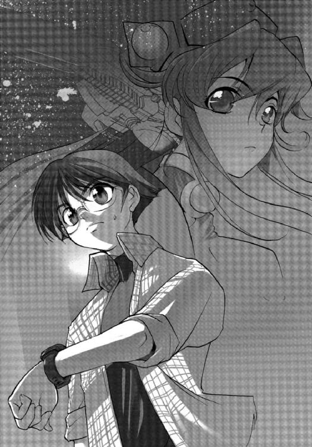
「一五〇〇光年を超える愛ですよ。素敵じゃないですか。わたしも誰かにそこまで想われてみたい......」
シズクはうっとりとした表情で言う。
「愛かどうかは......」
マサラは腕組みをして、ウーンとうなる。
そういう夢想を抱かなくもないが、それが現実になるとは思えない。自分なんかを選んだりしたら、彼女の価値がさがるというものだ。
「きっかけはともかく、ボクがこの戦争を終わらせたいと思う気持ちに、もう噓はない。ボクは無力かもしれないけれど、できることは全部やるつもりだ。いや、そうしないではいられない......」
それより、とマサラは思いだしたように腕時計を確かめる。
彼は今、ひとりの人物に取材をするため、約束の場所へと向かっているところなのだ。
その人物とは惑星国家キビ防衛大学の第七三期生のひとりである郡上カイ。アマテラスの乗員たちの同期生だが、彼らの計画には参加せず艦を降りている。
そういう学生は百人以上もいるわけだが、取材を申しこんでもすべて断られてきた。
だが、カイだけは承諾してくれたのである。
苦労のあげく取れたアポである。遅れてゆくわけにはゆかないのだ。
２
マサラが約束の場所に到着したのは、約束の時間の五分前だった。
そこはシティホテルの一室である。
ここ半年ほど、郡上カイはそこで暮らしているのだという。ほとんど外にも出ず、ひきこもっているそうだ。
「......ようこそ」
部屋の呼び鈴を鳴らすと、人が近づいてくる気配があり、ドアが開けられた。
姿を現したのは、ひどく瘦せた長身の男だった。
髪を茶色に染めているが、根もとのほうは黒と白のまだらになっている。データではまだ二一歳のはずだが、それより遥かに年がいっているように見えた。
部屋は片づいていたが、異臭がかすかに漂っていた。壁やカーペットには、いたるところにシミが残っている。
「どうも、佐竹マサラです」
マサラは挨拶をし、握手を求めた。
だが、カイは応じなかった。
無言でマサラとシズクのふたりを奥へと誘う。
そしてカイは窓際に置かれてあったソファーに腰を下ろした。
マサラは彼と向かい合う席に座る。
異様な空気を感じているのか、シズクは無言のまま取材の準備をはじめた。
カイは撮影も録音も許諾してくれている。顔や音声にデジタル処理を加えないでくれと、驚いたことに向こうから指定しているのだ。
どんな話が聞けるのかと、マサラは期待と不安が入り混じった気持ちだった。
「取材に応じていただき、ありがとうございました......」
マサラは、まずカイに礼を言った。
「ボクがあなたから聞きたいのは、アマテラスを買い取り、ヘンリエッタ星域惑星国家同盟と戦争をするという提案がなされたときのことです。キビ防衛大学第七三期生は学生数二九八名。そのうち、二八三名が航宙実習に参加していたと聞いています......」
そしてアマテラスに残る選択をしたのは、一一七名。半数以上が艦を降りているわけだ。
「惑星国家キビの第三護衛艦となるはずであった宇宙戦闘艦を買い取り、同盟に戦いを挑む。この提案がなされたとき、あなたはまずどう思いましたか？」
マサラは慎重に言葉を選びながら訊ねる。
「耳を疑いました......」
カイはポツリと答える。
「正気とはとても思えませんでした。しかし、あのときの状況は異常でしたから、やってみようという気になりかけてもいました......」
「しかし、あなたは艦に残らなかった......なぜです？」
「理由はいくつかあります。軍人は国家の決定にはそれがいかなるものであれ従うべきだと考えましたし、アマテラスはすぐ沈められるだろうと思いました。そしてその乗員の死はまったくの無駄でしかないと......」
カイはそこで言葉をきり、わずかに唇を歪めた。
「ですが、自分が艦に残らなかった最大の理由は、この計画の提案者、神崎キスカが嫌いだったからです」
「神崎艦長が嫌い？」
マサラは首をかしげる。
神崎キスカは危機的な状況でも冷静さを失わず、天才的な戦術を編みだしてアマテラスを勝利に導く名艦長というイメージがある。香月シノンら第一艦橋のオペレーターからの信頼も厚い。
「スターシップ・チャンネルに出てくる神崎キスカは、自分が知っている彼とはまったくの別人です......」
マサラが戸惑っているのに気づいて、カイが補足する。
「神崎が秀才であるのは間違いありませんが、決して冷静な男ではありません。自尊心が強く、嫉妬心も強い。防衛大学時代の彼は、首席になることしか頭にないようでした。そのために、彼は得意な科目を可能なかぎり受講し、資格を取得していましたから......」
そう言って、カイは嘲笑を浮かべた。
「彼の人間性を否定するつもりはありませんが、尊敬できない男の指揮下で命をかける気にはなれなかったということです」
「......なるほど」
マサラはうなずいた。
スターシップ・チャンネルは、完全なノンフィクションではないということは、マサラたち熱心なファンのあいだでも定説になっている。
アマテラスに同乗しているトニー・ガリアーノという放送作家が、シナリオを書いているようなのだ。
「それでは、艦長補佐の香月シノンもやはりチャンネルとは別の人格なのでしょうか？」
取材とは関係なかったが、マサラはそれを訊ねずにはいられなかった。
「香月シノンは首席で入学しているので、入学当初こそかなり注目されていましたが、そのあとは目立たない存在でしたので......」
印象が薄くてよく分からない、とカイはわずかに思案してから答えた。
「そうですか......」
マサラはため息をついた。
チャンネルに出ている彼女を見て、ファンになったわけだから、まったくの別人だと言われたら、正直、落胆しただろう。防衛大学時代は、目立たない存在だったというのは、ちょっと意外な気がしたが......
「話題がそれてしまいました......」
マサラはカイに謝り、予定していた質問にもどす。
「あなたを含め大勢の予想に反して、アマテラスは王国の戦闘艦に勝利してゆくわけですが、それを見てどう思われましたか？」
「正直、驚きました。私たちは訓練航海を終えたばかりの学生です。それが経験豊かな職業軍人に勝利するとは思ってもいませんでした。最初、自分は彼らの勝利を喜びました。彼らは同期生で、友人も大勢いますから。しかし、自分たちにとって、それが地獄のはじまりでした......」
「アマテラス──第三護衛艦に残らなかった第七三期生にとってですね？」
マサラは確認のため、カイに訊ねる。
カイはうなずいたかと思うと、突然、顔を歪めた。そしてソファーから立ち上がると、洗面所へと駆けこんでゆく。
激しい嘔吐の音が、しばらくのあいだ続く。
マサラはシズクを振り返り、無言の合図を送る。
シズクはうなずくと、カイを介抱しようと洗面所のドアをノックする。
「大丈夫ですか？」
シズクが声をかける。
「かまわないでください！」
ドアの内側から激しい拒絶の声がかえってくる。
咳の音と、水が流れる音が続く。
しばらくしてから、郡上カイは洗面所から出てきた。
「申し訳ありません......」
カイはドアのところで立ちつくしているシズクに頭を下げた。
「大丈夫ですか？ 体調が優れないようなら......」
「いえ、続けてください」
カイはソファーにもどると、ふかく腰を下ろした。
顔を洗ってきたのだろう。濡れた髪が額に張りついている。
「ある程度、想像はできますが、いったいなにがあったのでしょう？」
「おそらく、あなたのご想像のとおりですよ......」
カイは答えると、ゆっくりと目を閉じた。
「彼らが華々しく活躍するにつれ、自分たちはアマテラスを熱狂的に支援する人々から、臆病者、卑怯者、裏切者と誹られるようになりました......」
そしてカイは淡々とどのような中傷を受けたかをつぶさに語っていった。
銀河ネットのウェブサイトでは実名と顔写真をさらされ、掲示板にはありとあらゆる悪口をかかれた。
ポストは中傷メールであふれ、携帯にも電話がひっきりなしにかかり、親しかった者も態度がよそよそしくなった。
両親は職場で嫌がらせをうけ、年の離れた妹は中高学校でイジメを受けた。
「自分は間違ったことなどなにもしていません」
カイは胸を張って、マサラに言った。
「そう思います......」
マサラは言葉が詰まりそうになるのを、なんとか我慢した。彼自身、アマテラスに残らなかった学生たちのことを、臆病者と思ったこともある。
それから、郡上カイは家族に迷惑がかからないように、このホテルに身をひそめたこと、ここは彼の親族が経営していることなどを、ポツリポツリと語っていった。
次第に他人に会うのが恐ろしくなり、外へは一歩も出なくなった。
精神科医の往診を受け、精神安定剤を飲みながら、スターシップ・チャンネルを見続けている毎日だという。
「アマテラスに乗って戦っている夢を何度も見たことがあります......」
カイは淡々とそう語った。
しかし、目が覚めてしばらくすると、モニターに映っている彼らに、憎しみの言葉を浴びせ続けるようになるのだ、と......
戦闘のときは、いつも王国の戦闘艦を応援しているとも、彼は言った。
「アマテラスが沈めば、自分たちはこの悪夢から解放されるんですよ......」
彼が語っているあいだ、マサラは黙って、彼の話を聞くしかなかった。
シズクはカメラとマイクのチェックをしながらも、涙を流し続けていた。
「自分だけではありません。アマテラスに残らなかった同期生たちは、皆、同じ苦しみを味わっています......」
カイはそう言って、長い話を終えた。
マサラは取材に応じてくれたことに対し、深く感謝する。
「最後にひとつだけ、教えてください。ボクはあなたと同じ選択をした同期生の方々すべてに取材を申しこんでいます。ですが、ことごとく拒否されてきました。しかし、あなただけが取材に応じてくださいました。できれば、その理由をお聞かせ願いたいのです」
失礼な質問だとは承知していたが、マサラはどうしても訊ねずにはいられなかった。
「彼らは、この星系に帰ってきているじゃないですか？ 自分はこれからアマテラスの乗員になることだってできるんですよ」
カイははじめて笑顔を見せて言った。
「まさか、アマテラスに......乗るおつもりなのですか？」
マサラは驚いて訊ねてみたが、カイは笑顔を浮かべたままで、なにも答えなかった。
そのときだった──
笠原シズクの携帯に突然、電話がかかる。
シズクは、あわてて部屋のドアのほうへと移動する。
「......はい、シズクです。今、取材中って、知っているでしょ？」
彼女は怒ったように言ったが、次の瞬間には顔色が変わっていた。
「佐竹さん、マルチモニターのチャンネルをキビの地方放送に合わせてください」
「なにか、あったの？」
マサラはあわてて、シズクに訊ねる。
「説明するより早いから、チャンネルを変えてください！」
シズクはいつになく、激しい口調でマサラに言った。
「わかった......」
マサラは、テーブルのうえに置いてあったコントローラーを手にすると、マルチモニターのスイッチをオンにして、チャンネルをキビの地方放送ＫＨＫに合わせる。
ニュースセンターの映像が現れ、ゴールデンタイムのニュースキャスターが緊張した表情で原稿を見つめている。
その隣では、パートナーの女性キャスターが、震える声で原稿を読み上げていた。
「......もう一度、繰り返します。先程、国家反乱罪の容疑で、里見ミズオ元航宙自衛隊情報部一佐の自宅に強制捜査が入りました。里見元一佐は、所持していた拳銃で自殺。クーデターに関する証拠物件が多数、押収されたとのことです。このクーデターに関与していた元自衛官幹部は数百名に及ぶと見られております......」
「なんてことだ......」
ニュースを聞いて、マサラは呆然とつぶやいた。
元自衛官による軍事クーデターを期待していたわけではない。
だが、現政権があくまで、王国に追従する姿勢を見せたことが、たまらなく悔しかった。
（まさに、傀儡政権だな......）
マサラは心のなかで吐き捨てた。
「里見一佐って、第三艦橋の里見レンナさんのお父様ですよね......」
シズクが嗚咽まじりにつぶやく。
「そうだったね......」
マサラが力無くうなずく。
本当に、いたたまれない気持ちだった。この事件がどんな波紋を広げるかと思うと、マサラは寒気を覚える。
（この国は、いったいどうなるんだろう......）
マサラは拳を握りしめた。
そしてそのときふと気がついた。
マルチモニターを見つめる郡上カイの表情が、不思議と穏やかなことに......
（なんで、そんな顔ができるんだろう？）
マサラは疑問に思った。
「急用ができました。申し訳ありませんが、取材はここまでにしていただけますか？」
マサラを振り返って、カイがそう申し出た。
「分かりました。これで失礼します」
彼の不可解な表情も気になったが、それ以上に今のニュースの内容が衝撃的だった。
「みんなのところに帰ろう。急いで情報を集めないと......」
マサラはシズクにうなずきかけた。
クーデターは未遂に終わったと報道は伝えている。
だが、それで事件が終わるとは、マサラにはとても思えなかった。むしろ、きっかけでしかないとの予感を強く覚える。
そしてマサラは、その予感が当たってほしいのか、外れてほしいのかさえ、分からないでいた......
３
同日 キビ星系第四惑星軌道付近──
里見元一佐のクーデター未遂事件と、彼の自決は、大きな波紋を広げていった。
クーデターに関与した容疑で、続々と元自衛官が逮捕され、大量の武器・弾薬が押収される。
その報道に刺激されたのか、市民のデモは過激さをまし、国会議事堂や首相官邸に乱入しようとする者が続出した。
そしてついに、政府はキビに駐留している同盟軍に治安出動を要請したのである。
同盟軍の兵士は、官公庁の防衛のため展開した。
市民は同盟軍の兵士たちに、怒りを爆発させ、投石や火炎瓶を投げつける。同盟軍はそれに応戦し、発砲。市民のあいだに多数の死傷者がでた。
それに激怒した警官隊の一部が、同盟軍に抵抗し、散発的な銃撃戦となる。
キビの首都は、もはや戦場も同然だった。
そのニュースは、キビの地方放送で克明に報道され、アマチュアカメラマンも個人サイトに映像をアップしてゆく。
スターシップ・チャンネルはそれらのニュースをセレクトして放送しはじめた。
ディータ・ミルコフがキャスターをつとめ、艦長の神崎キスカや報道官の間宮リオがスタジオに招かれ、コメントを求められた。
そのなかで、アマテラスが現在、置かれている状況が公表されたのである。
王国の宇宙戦闘艦が、キビ宇宙港を盾としているという事実を......
『──父のことは気にしないで。父は父なりの信念にもとづいて行動したのだから。悲しくないと言ったら噓になるけど、でも、今は悲しんでいるときではないから』
第三艦橋の浮遊物監視員である里見レンナから届いた文字メールを、香月シノンは涙を浮かべながら読んだ。
彼女のもとに走ってゆきたいのだが、今は第一級戦闘態勢なので、第一艦橋を離れることはできない。
（なんと声をかけていいかも思いつかないし......）
シノンはモニターに向かってうなだれる。
そして、
『気を落とさないでね』
と、レンナに短くメールを返信した。
そのとき、スタジオから不機嫌な表情で艦長の神崎キスカが帰ってきた。
「クーデターが成功していたら、ボクらの立場は楽になったのに。このままだと、ボクたちはキビ政府の支持を受けられなくなる」
艦長席に腰を下ろすなり、キスカは吐き捨てるように言った。
「あたしたちが帰ってきたせいで、とんだことになっちゃったね......」
秋里ミユリが泣きそうな表情でぽつりとつぶやく。
死者は十数人、負傷者は百名を超えている。暴動がおさまらないかぎり、その数はもっと増えるだろう。そして今のところ、その気配はない。
「ただ、わたしたちが国民の支持を受けていることが、世界の人々にはっきり伝わったはずだ。キビの現政権が王国の傀儡でしかないこともね」
氷坂アレイが独特の声と口調で言った。
「だが、政権を交替させて国民投票を実施しなければ、この星系にやってきた意味はない」
キスカはお手上げだという表情を見せる。
「それ以前に、敵艦が宇宙港を背にしている以上、アマテラスは攻撃できないんですよ。進路を変更して、星系外に脱出するしかありません」
シノンがキスカを振り返って、そう進言した。
「──それはできないわ」
そう答えたのは、キスカではなく、第三艦橋の間宮リオだった。
「このままだと、わたしたちは一方的に攻撃されて沈められるのよ？」
シノンは個人用のモニターにリオを映し、反論する。
「──ええ、そのとおりね。だけど、わたしたちがここで逃げたら、政府に対し、命がけで抗議をしてくれた市民を、そして世界中の支持者を裏切ることになる。それだけは、絶対にできないわ。銀河ネットもおそらく同じ意向だと思う」
「──そのとおりよ、シノンちゃん」
リオの発言に続いて、シノンのヘッドセットにだけ、ディータ・ミルコフの柔らかな声が響いた。
「スターシップ・チャンネルが終わってもいいということですか？」
シノンはヘッドセットのマイクに向かって、問い返す。
「──視聴者の支持を得られなくなったら、どのみちチャンネルはおしまいよ」
「わたしたちに死ねということですか？」
「──それは、わたしたちが決めることじゃないから......」
ディータはそう言うと、ごめんね、とつけくわえて通信を切った。
「──このまま進んでも、わたしたちを待っているのは破滅しかないということは分かっているわ。だけど、進むしかないの......」
「希望者は小型艇に分乗して退艦すればいい」
キスカが帽子を目深にかぶりながら、静かに言った。
「ボクとリオは、残るしかないけどな......」
ふたりはおそらく話し合ってそう決めたのだろう。
「わたしも立場は同じだわ。王国から首謀者だと名指しされているんだから......」
シノンは唇を嚙みしめた。
退艦した乗員たちも無事に済むとは思わない。王国の軍事法廷で裁かれ、おそらくは極刑に処せられるだろう。
世界的に死刑は廃止されているか、廃止されていないにしても刑の執行はひかえられている。だが、軍事法廷だけは例外である。
現実に、国王ことオーギュスト・ペリエが病気に倒れたあと、王国内部では激しい権力闘争があったようで、大勢の上級将校が粛清されている。
ナンバー２と目されていたルイス・ベルモントも相次ぐ失態の責任を取り、自決したと報道されているし、報道官であるハンス・ゲオルグ・ヘルマンも突如、辞任した。事実上の処刑であり、解任であると多くの専門家が指摘している。
アマテラスの乗員に恩赦をかけるとはとうてい思えなかった。
「わたしたちは、これで終わりなの？」
シノンはリオに向かって問いかけた。
「──終わりと決まったわけじゃないわ。信じて待つことよ......」
「信じてって？ いったい何を？」
「──奇跡を、よ......」
リオはシノンに答えると、任務にもどりますと微笑みかけてきた。
（なにか、確証があるのかな......）
シノンはそう思うことにした。
奇跡など信じないが、リオなら信じてもいい。
「今回は、作戦を考えなくてもいいということね......」
シノンは、そっとつぶやいた。
４
二三〇一年一月二九日 惑星キビ軌道宇宙港──
自由護衛艦アマテラスは減速しつつ、惑星キビの軌道宇宙港に向かって進んでいた。
その行く手には、王国の戦闘艦ジュットランドが虎視眈々と待ち受けている。
駐留任務を主とする旧式艦ではあるが、アマテラスが抵抗できない以上、勝利は疑いない。
宇宙港を盾にしている王国の戦術に非難は高まっているが、ジュットランドはまったく動く気配はなかった。
一〇キロほど離れた空間で、宇宙港との相対速度を合わせている。キビの宇宙港から、ジュットランドの姿は十分に目視できた。
王国は宇宙港を防衛するための戦術だと繰り返しているが、それが欺瞞にすぎないのはあきらかである。
市民に対し発砲を行ったことも、国際世論の非難の対象となっている。
だが、すべての原因はアマテラスにあると、新しい報道官は主張を繰り返しているだけだ。そしてアマテラスに残された道は、無条件降伏か死しかないのだと......
市民による暴動は拡大する一方で、政府は戒厳令を施行し、市民の外出を禁じたが、それに従う者はほとんどおらず、抗議行動を続けていた。
警察組織は完全に麻痺し、今や政府首脳や高官を守っているのは、同盟の駐留軍のみ。
市民も最初の衝突のあとは、同盟軍との衝突は避けており、流血の事態にはなっていない。彼らはキビ政府に対し、アマテラスからの要求を受け入れるよう、二四時間、シュプレヒコールをあげ続けている。
だが、政府首脳は、非合法の要求には応じられないと繰り返し、市民はすみやかに平常の活動にもどるよう声明を発表するのみ。
アマテラスが沈めば、市民たちの暴動も収まるだろうと推測しているのだ。
「政府の首脳が守っているのは、もはや国でも国民でもないな。自分たちの権力だけだ」
宇宙服に身を包んだひとりの若者は、ヘルメットのなかで吐き捨てるようにつぶやいた。
郡上カイである。
佐竹マサラとのインタビューに応じたその日に、ここ軌道宇宙港にシャトルに乗ってやってきたのだ。
彼はキビ宇宙港の職員に正式採用されている。職種は、貨物用シャトルのパイロット。
カイが今いる場所は、シャトルの格納庫であった。
そして一機のシャトルが彼の目の前にある。それが貨物用ではなく、軍事用のそれであることは、防衛大学に在籍していた彼には一目で分かった。
こんなものが、なぜここに安置されてあるのかと、カイは不思議に思う。
自衛隊が解散したおり、同盟に接収されているはずだからだ。
「──準備はいいか？」
そのとき、ヘルメットのスピーカーに通信が入った。
男の声である。
カイはその男が誰か知っている。
元自衛官で、所属は情報部、階級は三佐。彼がカイに接触してきたのは、つい先日のことである。そしてひとつの依頼を受けたのだ。
「準備も、覚悟もできています」
カイは男に答えた。
「──よろしい、シャトルに乗りこみたまえ」
男の言葉に従い、カイはシャトルに乗りこみ、操縦席に着く。
「──もう一度、手順を繰り返すぞ。我々はこれから行動を起こし、宇宙港を制圧する。同盟の駐留軍の大半は今は地上にいる。宇宙港を警備しているのは、百名にも満たない。三〇分以内に作戦は完了する予定だ......」
政府首脳や王国は、首謀者である里見一佐の自決で、クーデターを未然に防いだつもりでいる。だが、里見一佐は〝囮〟でしかなかったのだ。
王国にマークされているのを承知で、彼は架空のクーデター計画を立案し、準備を遂行していたのだ。それが漏洩することを前提として......
その陰で、真のクーデター計画が慎重に進められていたのである。
「──作戦開始と同時に、格納庫のハッチが開く。我々が行動を起こしたことは、すぐに敵艦にも連絡がゆこう。それよりまえに、貴君には任務を完了してもらいたい......」
「はい！ 自分は小型艇を操縦し、同盟軍戦闘艦ジュットランドに突貫します。作戦目標は同艦の撃破......」
「──それでいい。貴君の任務は重要だが、難しいものではない。彼らはキビ宇宙港を盾に使ったが、そのことを後悔することになるだろう」
「了解しました......」
「──貴君がこの任務に志願してくれたことに感謝する。残念ながら、キミが生還できる可能性はゼロに等しい。だが、これでキミはアマテラスの乗員となれるのだ......」
「光栄に思います......」
ヘルメットのなかで、カイは唇を歪めた。
彼自身は笑っているつもりだったが、もしも他の誰かがその顔を見たとしても、決してそうは思わなかっただろう。
（これでもう夢をみなくてすむ。そして彼らを憎まずにも......）
家族も苦しむことはなくなると、カイは心のなかで繰り返しつぶやいた。
カイは操縦桿を握りながら、ハッチが開くのをじっと待つ。
そして、そのときがやってきた。
カイはエンジンに点火し、最大加速で格納庫から発進する。その三秒後に〝魚雷〟を発射した。ステルス性能を備えた高性能の対艦ミサイル......
魚雷は小型艇から離れると、宇宙の闇に溶けこみつつ空間を滑ってゆく。
危機が迫っていることに、敵艦の乗員はまだ気づいていないだろう。だが、高度に自動化された近接防御兵器は即座に反応していた。
パルス状のレーザーがシャワーのように、カイが操縦する小型艇に降り注ぐ。だが、軍事用の小型艇だけあって、船体には多少の装甲が施されてあった。
「数十秒は保つ！」
カイはヘルメットのなかで、叫びをあげていた。
「それで十分だ!!」
彼の乗る小型艇は、戦闘艦ジュットランドの近接防御兵器を欺く囮でしかない。そして敵艦の乗員はこの突発事態に正しく対処できないだろう。
機械は瞬時の判断が可能だが、その思考は単純だ。人間は高度な思考が可能だが、判断をくだすには時間がかかる。
機械と人間のそれぞれの隙をついてすべては運び、そして気がついたときには終わっているはずだった。
そしてその数秒後、小型艇は大爆発を起こし、宇宙の塵芥となった。だが、ほとんど同時に、戦闘艦ジュットランドも魚雷の直撃を受けていたのである。
魚雷に装塡されていた反物質弾頭が反応し、大爆発を起こす。艦尾は一瞬にして、消滅し、かろうじて原型をとどめている艦首も吹き飛んでゆく。
その閃光は、キビの地表からも観測可能なほどであった。
当然、ジュットランドから二〇光秒の距離にまで接近していたアマテラスにも、その爆発は観測されたのである──
５
「な、なにが起こったんだ......」
突然の閃光にメインモニターがホワイトアウトするのを見て、神崎キスカは艦長席から腰を浮かし、呆然となった。
その瞬間まで、アマテラスの艦内は重苦しい空気につつまれていた。
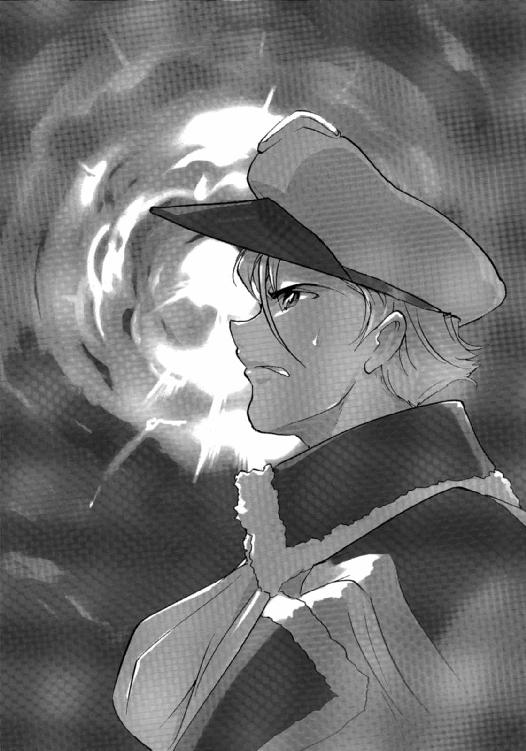
全員が死を覚悟しながら、一秒ごとに近づいてくる戦闘可能距離までカウントダウンを行っているところだったのである。
「敵艦から閃光......いえ、爆発です。アルファ、ベータ放射は微弱。高エネルギーのガンマ線を検出。反物質弾頭の反応と推測されます」
秋里ミユリが泣きそうな声で叫ぶ。
「敵艦が......沈んだ？」
香月シノンは、ゆっくりと首を横に振る。
「おそらく魚雷の直撃を受けたものと思われます......」
気がおかしくなり、妄想でも見ているのかとさえ思った。
シノンは宇宙港を傷つけることなく、敵艦を沈めるための戦術を模索し続けていた。そして唯一考えついた手段が、〝魚雷〟を直撃させることであった。
敵艦は旧式なので、最新式のステルス性能を備えた魚雷を発見できない可能性にかけようと考えたのだ。
だが、そのとき、ネックになるのは、キビ宇宙港およびキビ星系の戦略防衛システムの観測装置である。
敵艦は、それらとデータリンクしているはずだからだ。
「──戦闘中、ごめんなさいね。今、チャンネル宛てにビデオメールが送信されてきたの。差出人は、カイ・グジョウ。防衛大学第七三期生だそうだけど......」
ディータ・ミルコフの遠慮したような声が、突然、艦橋に響いた。
メインモニターに副映像が開き、困惑したような表情が映る。
「郡上？」
キスカが首をひねる。
無論、その名前は記憶にある。同期生のひとりだが、ほとんど口を利いたこともない。
この艦を購入し、王国と戦うという提案に対しても、反対こそしなかったが、賛同もしなかった。
あっさりと艦を降り、惑星国家キビへと帰還している。
「それで、メールの内容は？」
シノンがいらだって、ディータに訊ねる。
あれこれ詮索するより、メールを見たほうが早いに決まっているのだ。
「──局のほうでチェックしたんだけど、犯行声明......いえ、そんなことを言ったら失礼よね。同盟軍の戦闘艦を沈めるという予告だったようなの。チャンネルで使おうと思うのだけど、そのまえに、みんなで見てくれないかな？」
「すぐにデータを送ってください」
キスカがあわてて答えた。
「──了解、艦長」
ディータが答え、通信をきる。
「データ受信しました。モニターで再生します」
五秒ほど間があって、氷坂アレイが淡々と報告した。
シノンは腰を浮かせて、メインモニターを食い入るように見つめる。
宇宙港の格納庫と思しき映像を背景に、宇宙服に身を包んだ男が映る。
「本当に郡上か？」
キスカがシノンに訊ねる。
「ずいぶん瘦せているけど、間違いなく郡上くんだわ......」
シノンがうなずく。
別人かと思うほど、防衛大学時代の彼とは印象が違う。とくに、目の光り方が普通ではないように感じられた。
「──自由護衛艦アマテラスに搭乗している同期生諸君、郡上カイだ。このメールを見ている瞬間、ボクはもう宇宙に散っているはずだ。小型艇に乗り、同盟軍の戦闘艦ジュットランドに特攻しているからだ。戦果は無論、ボクには分からない。だが、キミたちはすでに確認していることだろう......」
しばらく沈黙があり、郡上カイは静かに話しはじめた。
「──ボクはアマテラスに残らなかったことを深く後悔している。だが、今、ようやくキミたちと一緒に戦う機会を得た。どうか、ボクをアマテラスの一員として迎えてほしい。キミたちの窮地は、ボクが命に代えて救うから。それでは、行ってくる......」
カイはそう言うと、モニター越しに敬礼をしてきた。
第一艦橋にいるメンバーは全員、立ち上がって敬礼を返した。
「......氷坂くん、この映像を全艦に放送してくれないか」
キスカがかすれる声で言った。
「了解......」
アレイは返答し、一連の操作を行う。
「奇跡が起こったということ？」
シノンも座席にもどり、ひとりごとのようにつぶやく。
「でも、どうして郡上くんが......」
シノンは深くうなだれる。
それから、思いだしたようにコンソールを操作し、第三艦橋の間宮リオに通信を入れる。
シノンのモニターに、ウェーブした金色の髪にブルーのカラーコンタクトをつけたリオの顔が映る。
「リオ......」
シノンはモニターに向かって、呼びかけた。
「もしかして、このことは知っていたの？」
「──計画自体は知っていたわ......」
リオは静かにうなずいた。
「──伯父様のところにキビから連絡があったしね。でも、郡上くんがそれを実行することまでは知らなかった。知っていても、やめさせたりしなかっただろうけど......」
リオは答えて、顔を伏せる。
「どうして、郡上くんなの？」
シノンはリオに訊ねた。
「──それは、分からないわ。ただ計画の立案者が、第七三期生から候補者を選んだのは間違いないと思う。そのほうがいろいろと収まりがいいから......」
「同期生を救うために命をかけたという美談になるから？ 王国の戦闘艦を沈めたのが、アマテラスの関係者ということにできるから？」
「──そんなところね......」
リオはふたたびうなずく。
「──納得ゆかないでしょうけど、郡上くんの犠牲のおかげで、わたしたちは救われた。あとは、キビの政府が決断するだけ。それも、間もなくでしょうけど......」
「次はなにが起こるの？」
シノンはリオに訊ねた。
そのときである。
「──ふたたび、ごめん。緊急ニュースよ。宇宙港で軍事クーデターが起こったみたい。宇宙港は制圧したと発表があった。発表したのは、キビ航宙自衛隊情報部、元三佐、池江シライ。地上でも元自衛官が武装蜂起し、駐留軍と交戦しているみたい......」
ディータの緊迫した声が、ふたたび艦橋に響いた。
「クーデター......」
衝撃的な言葉に、シノンは息を飲んだ。
「──そういうことよ。黙っていて、ごめんね......」
リオは寂しそうに微笑むと、通信を切った。
王国の戦闘艦が沈み、クーデターまで起こったとあれば、たしかに政府もアマテラスが示した要求を飲むしかないだろう。
解散総選挙と国民投票の実施である。
「──クーデターの模様を伝える映像が、個人ネットに多数、アップされている。今、局のほうでデータを収集してもらっている。あ、今、キビの地方放送も番組を中止して特別報道を開始したみたい......」
ディータもかなり混乱している様子で、いつになく早口だった。
「メインモニターにＫＨＫを映してくれ」
キスカがアレイに声をかける。
「了解......」
アレイはうなずき、メインモニターの主映像にキビの地方放送を映しだした。
国会前の道路で、激しい銃撃戦が行われている光景が飛びこんでくる。
どこから調達したものか、クーデターに参加している自衛官は完全武装だった。それに制服姿の警察官がまじり、拳銃で戦っている。
「なんで、こんなことに......」
シノンは思わず手で顔を覆った。
アマテラスがキビ星系に帰ってきたことで、これだけの大事件が起こるとは考えもしなかった。前回、キビ星系で王国と交戦したときとは、まったく反響が違う。
メディアによって、アマテラスの活躍が広く浸透していたからだろうか？ キビの国民にとって、アマテラスは英雄......いやその名のとおり女神のような存在になっていたのかもしれない。
「ボクたちが支持されていることの証さ。郡上も、自衛官や警察官、さらには一般市民までもが、命をかけてアマテラスを救ってくれたんだ......」
キスカがポツリとつぶやく。
「とにかく、ボクたちは勝ったんだよ」
「そうね......」
今回ばかりは、正直、シノンも敗北と死を覚悟した。同時に、自分の無力さもあらためて悟った。
「第一級戦闘態勢を解除。このまま減速を続け、キビ宇宙港へと入港する。王国の艦隊がやってくるまで、ゆっくりしたいものだな......」
キスカはそう言い残すと、軍帽をかぶりなおして艦長席を離れた。
「当直は第三班。ボクたちは待機だ。ボクは部屋でゆっくりとニュースをチェックすることにするよ」
そして、キスカは足早に第一艦橋をあとにした。
「ぜんぜん実感なかったけど、あたしたちキビに帰ってきたんだね......」
ミユリが思い出したようにつぶやく。
「クーデターが成功したらだけどな......」
アレイは座席を後ろに倒すと、頭の後ろで手を組む。
「成功すると思う。このクーデターは間違いなく周到に計画されたものだから......」
メインモニターに映る激しい銃撃戦を見つめながら、シノンは確信をもって言った。
そしてシノンの予測は正しかった──
軍事クーデターは成功し、まずキビ宇宙港が制圧された。地上でも激しい戦闘のあと、政府の介入もあり、同盟の駐留軍は投降。施設に収容された。
内閣は総辞職、国会は解散。
総選挙が布告され、同時に国民投票が実施されることになる。
アマテラスの要求は、すべて実行に移されたわけだ。
そしてアマテラスは宇宙港に入港し、人々の歓迎を受ける。
クーデターに参加した元自衛官は武器を返還し、解散。
間宮タツマはアマテラスを降り、選挙に立候補を表明した。
国民に真意を問うためである。
選挙は緊急時でもあり、一週間後とされた。
選挙戦は実質、アマテラスを支持するかどうかが争点とされた。そして国民世論は銀河ネットの調査によれば、アマテラス支持が八〇パーセントを超えていた。
間宮タツマの公認を得るかどうかで、選挙に勝つか負けるかが決まるとアナリストたちはそろって断言する。
ただ、間宮が総理になったあとの政局運営はきわめて厳しいと予測された。
キビ星系には、やがて王国の艦隊が侵攻してくる。それに対し、アマテラスはこれまでどおり、祖国を防衛するのでなく、遊撃的に王国と戦い続けることになる。
王国に制宙権を抑えられ、厳しい経済制裁が行われるのは明らかだった。
間宮タツマがいつまで国民の支持を受けられるか疑問視する声はすでにあがっている。
彼の支持は、自由護衛艦アマテラスと連動していることはいうまでもない。
ヘンリエッタ星域惑星国家同盟の指導者の交代、ヘンリエッタ星域自治連合が保有した四隻の戦闘艦隊。同盟に対して国民の総意のもとに徹底抗戦する覚悟を示した惑星国家キビ。
ヘンリエッタ星域を舞台にした戦争は、また新たな段階へと移行しようとしていた。
そしてキビ宇宙港に停泊するアマテラスのもとに、ひとりの若者が取材のために訪れる。
一五〇〇光年離れた地球からやってきたＮＧＯの代表である佐竹マサラであった──
あとがき
二〇〇五年三月二〇日 神戸──
いつもお待たせして申し訳ありません。スタオペ⑥巻お届けいたします。
最近、年を取ったなぁと思うこと多いです。まだ四〇代になりたてなんですが、若い頃には自慢できた記憶力と視力が急速に悪くなってきて、我ながら情けなくなります。
このシリーズでも読み直すと、固有名詞や設定を違えていたりすることけっこうあって、読者の皆様からお叱り受けること多くなりました。仕事のスケジュールや作品のアイデアなども昔は手帳に書きこんだりすることなかったですが、今はスケジュールは携帯にアイデアはノパソに記録するようにしています。作品の設定などもデータベース化していて、年表なども自作しはじめています。ま、シリーズが増えてきているというのが、最大の問題なのですが......
このあとがきを書いている現在、この作品のＴＶアニメはちょうどクライマックスを迎えていまして、作者は勝手にもりあがっています。視聴者のみなさんもそうだと幸いです。作者的には自分の好きな宇宙もの、それも戦艦ものをやれて満足していますし、原作とはいろいろ異なっていますが、アニメとして完成度の高いものを作っていただいて嬉しく思っています。ＴＶ放映を見た人も、見逃した人もぜひＤＶＤを購入してください。このシリーズがＴＶアニメになったのは、熱心な読者の皆様の応援あってこそです。心から、感謝しております。
話は変わりますが、先日、究極の素粒子論であり宇宙論ともいわれている超弦理論を紹介する番組がＮＨＫのＢＳで放送されていたので、これは見逃すわけにはゆかないと、飲みの約束をキャンセルして見てみました......が......、僕にはさっぱり理解できませんでした～
相対性理論にしても量子力学にしても数式はちんぷんかんぷんですが、そこから導きだされる現象は漠然とイメージできる（ような気がしています）。しかし超弦理論が描きだす世界像はまったく想像の域を超えています。超弦理論が、純粋に数学的な理論かつ、まだ未完成だからでしょうか？ とにかく、これからの研究の進展には期待したいところです。
ただその番組のなかでひとつだけ、平行世界の存在と重力子を使った平行世界間通信が可能かもしれないという予測があって、ちょっと嬉しくなりました。
平行世界といえば、もともとはＳＦのアイデアでしかなかったもの。それが最新の科学理論で予測されるようになる──
科学が進歩するには、人間の想像力がいかに大切かが分かる実例なのではないかという気がします。僕たち作家が自由気ままに想像したことが、遠い未来に実現したりあるいは宇宙の真理をついていたりする。そう思うと、とても楽しい気がします。
無論、そのためには大勢の科学者や技術者の弛まぬ努力が必要です。残念ながら、僕は科学者にも技術者にも適性がありませんでしたが、最前線で活躍されている方々には、心から敬意を抱いています。最新の科学や技術は、僕にとって最大の娯楽なのですから。
イラク情勢やフジＴＶを巡る騒動など、戦争とメディアについても様々なトピックのある昨今です。世界から戦争がなくなる日が本当に来るのか、インターネットとＴＶ、ラジオは統合されるのかなど、この作品の作者として注意深く見守っています。
それでは、第⑦巻のあとがきで、ふたたびお目にかかりましょう。
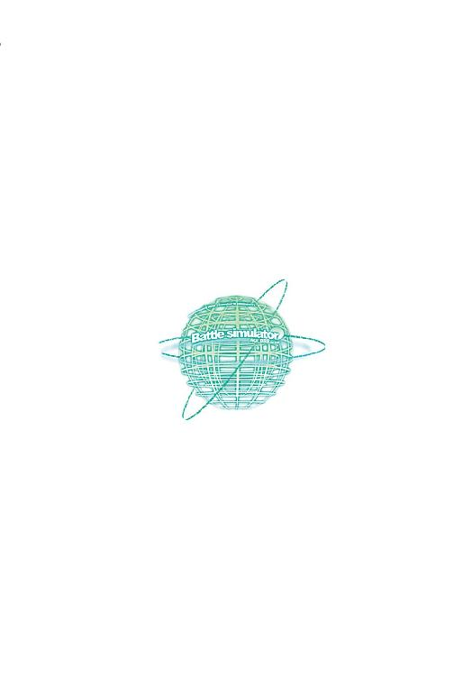
水野 良
１９６３年、大阪に生まれる。大学在住中にＲＰＧに熱中し、ゲームデザインを中心とした活動を開始。『ロードス島戦記』『クリスタニア』などファンタジー小説の旗手として多数の作品を発表する。高校時代はＳＦ同人誌に参加しており、長年のＳＦのファンでもある。

内藤 隆
キャラクターデザイン、イラスト担当。１９７５年、長野県に生まれる。２０００年初頭に小社刊『コミック電撃大王』で漫画家としてデビュー。現在、コミック版『スターシップ・オペレーターズ』第１巻が好評発売中。
山根公利
メカニカルデザイナー。１９６６年、島根県に生まれる。代表的な参加作品『バブルガムクライシスシリーズ』『ガルフォースシリーズ』にはじまり、『機動戦士ガンダム第08ＭＳ小隊』『カウボーイビバップ』『無限のリヴァイアス』など多数。アニメーションメカデザイナーの第一人者である。
 電撃文庫
電撃文庫
スターシップ・オペレーターズ⑥
水野良
発 行 2013年12月27日
発行者 塚田正晃
発行所 株式会社KADOKAWA
〒102-8177 東京都千代田区富士見2-13-3
03-3238-8745（営業）
http://www.kadokawa.co.jp/
プロデュース アスキー・メディアワークス
〒102-8584 東京都千代田区富士見1-8-19
03-5216-8399（編集）
http://dengekibunko.dengeki.com/
本書（電子版）に掲載されているコンテンツ（ソフトウェア／プログラム／データ／情報を含む）の著作権およびその他の権利は、すべて株式会社KADOKAWAおよび正当な権利を有する第三者に帰属しています。
法律の定めがある場合または権利者の明示的な承諾がある場合を除き、これらのコンテンツを複製・転載、改変・編集、翻案・翻訳、放送・出版、公衆送信（送信可能化を含む）・再配信、販売・頒布、貸与等に使用することはできません。
(C)2005 水野 良
※この電子書籍は2005年5月25日発行の電撃文庫『スターシップ・オペレーターズ⑥』初版に基づき制作